UDN
Search public documentation:
ParticleSystemReferenceKR
English Translation
日本語訳
中国翻译
Interested in the Unreal Engine?
Visit the Unreal Technology site.
Looking for jobs and company info?
Check out the Epic games site.
Questions about support via UDN?
Contact the UDN Staff
日本語訳
中国翻译
Interested in the Unreal Engine?
Visit the Unreal Technology site.
Looking for jobs and company info?
Check out the Epic games site.
Questions about support via UDN?
Contact the UDN Staff
파티클 시스템 참고서
문서 변경내역: Scott Sherman 작성. Wyeth Johnson 업데이트. Jeff Wilson 관리. 홍성진 번역.
개요

ParticleSystem 클래스
Bounds (경계)
Fixed Relative Bounding Box (고정된 상대 경계 박스) - 파티클 시스템에 대해 유저가 경계-박스를 설정할 수 있게 합니다. 매 프레임마다의 경계 프레임 업데이트 부하를 제거할 수는 있지만, 반대 급부로 이펙트가 보이지 않을 때에도 렌더링/업데이트된다거나, 반대로 이펙트가 보이는 데도 렌더링/업데이트되지 않는다거나 할 수가 있습니다. 크기 스케일이 엄청나게 변하는 이미터가 있지 않고서야, 퍼포먼스를 생각한다면 항상 고정된 경계 박스를 사용하는 것이 좋을 겁니다.
주: 캐스케이드 툴바의 '경계 토글' 버튼에 우클릭하면 이 대화창이 캐스케이드의 다이내믹 박스에 현재 사용중인 값으로 채워지게 되며, 링크 트윅의 시작점으로 활용해 볼 수 있습니다.
Use Fixed Relative Bounding Box (고정된 상대 경계 박스 사용) - 참이면 코드가 파티클 시스템의 경계로 FixedRelativeBoundingBox (고정된 상대 경계 박스)를 활용합니다.
Delay (지연)
Delay (지연) - ActivateSystem() (시스템 활성화 함수)가 실행됐을 때 활성화 전까지 파티클 시스템이 대기할 기간입니다. 또한 이 값은 Use Delay Range (지연 범위 사용) 값이 참일 때 임의의 지연값 선택시 사용할 범위의 상한값이기도 합니다.
Delay Low (지연 하한) - Use Delay Range (지연 범위 사용) 값이 참일 때 임의 지연값 선택시 사용할 범위의 하한값입니다.
Use Delay Range (지연 범위 사용) - 참이면 실제 지연값을 Delay Low 에서 Delay 사이의 임의 값으로 사용합니다.
LOD (레벨 오브 디테일)
LOD Distance Check Time (LOD 거리 검사 시간) - 활용할 LOD 레벨을 정하기 위해 시스템이 거리 검사를 수행할 주기(초 단위)입니다. (LODMethod가 자동으로 설정되었을 때만 사용됩니다.)
LODDistances (LOD 거리) - 거리에 따라 어느 LOD 레벨을 활용할 지 정하기 위한 배열입니다. (LODMethod가 자동으로 설정되었을 때만 사용됩니다.) 이 수치가 LOD 레벨 선택을 위해 떨어져 있어야 하는 최소 추천 거리입니다. LOD 레벨이 셋 있는 시스템을 예로 들어 보면:
LODMethod (LOD 방법) - 시스템이 적절한 LOD 레벨을 선택하는 데 활용하는 열거형을 가리킵니다. 가능한 방법은 두 가지입니다:
LODSettings (LOD 세팅) - 개별 LOD마다 사용할 구체적인 세팅을 정하는 구조체 배열입니다. 현재 유일한 세팅 Lit 은 지정된 LOD가 사용중일 때 파티클 시스템이 빛을 받을지 여부를 조절합니다.
| LOD 거리 인덱스 | 값 | 범위 | 선택되는 LOD 레벨 |
|---|---|---|---|
| 0 | 0.0 | 0.0 - 2499.9 | 0 (최고위) |
| 1 | 2500.0 | 2500.0 - 4999.9 | 1 |
| 2 | 5000.0 | 5000.0 - 무한 | 2 |
| 방법 | 설명 |
|---|---|
| Automatic (자동) | LOD 거리와 검사 시간에 따라 LOD 레벨을 자동으로 설정합니다. |
| DirectSet (직접설정) | 게임이 직접 시스템에 사용할 LOD 레벨을 설정합니다. |
MacroUV (매크로 UV)
Macro UV Position (매크로 UV 위치) - ParticleMacroUV (파티클 매크로 UV) 머티리얼 표현식에 대한 UV 텍스처 좌표 생성시 중심점으로 사용되는 파티클 시스템에 상대적인 로컬-공간 위치입니다.
Macro UV Radius (매크로 UV 반경) - 파티클 매크로 UV 머티리얼 표현식의 타일링 시작지점용 UV 텍스처 좌표가 생성되는 곳인 매크로 UV 위치 로부터의 거리를 정하는 월드-공간 반경입니다.
Mobile (모바일)
Use Mobile Point Sprites (모바일 포인트 스프라이트 사용) - 참이면 모바일 플랫폼에서 파티클 시스템은 파티클 렌더링 속도를 올리기 위해 포인트 스프라이트 렌더링을 사용합니다.
Occlusion (오클루전)
Custom Occlusion Bounds (커스텀 오클루전 경계) - EPSOBM_CustomBounds 오클루전 경계법을 사용할 때 오클루전 계산용으로 사용할 경계입니다.
Occlusion Bounds Method (오클루전 경계법) - 파티클 시스템의 오클루전 계산시 사용할 방법입니다.
| 방법 | 설명 |
|---|---|
| EPSOBM_None (열파시오경법_없음) | 파티클 시스템용 오클루전을 계산하지 않습니다. |
| EPSOBM_ParticleBounds (열파시오경법_파티클 경계) | 파티클 시스템 컴포넌트의 경계가 파티클 시스템용 오클루전 계산에 사용됩니다. |
| EPSOBM_CustomBounds (열파시오경법_커스텀 경계) | 커스텀 오클루전 경계 값이 파티클 시스템용 경계 계산에 사용됩니다. |
ParticleSystem (파티클 시스템)
Orient ZAxis Toward Camera (Z축을 카메라 쪽으로 맞춤) - 참이면 파티클 시스템의 로컬 Z축을 항상 카메라 쪽으로 맞춥니다.
SecondsBeforeInactive (몇초 이상 비활성화) - 파티클 시스템이 이 기간(초)만큼 렌더링되지 않으면 비활성화되어 더이상 틱되지 않습니다. 값이 0이면 강제로 비활성화되지 않습니다.
Skip Spawn Count Check (스폰 수 검사 생략) - 참이면 엔진의 스폰 제한기 검사가 수행되지 않습니다. 이 검사는 엔진의 (BaseEngine.ini에 지정되어 있는) MaxParticleVertexMemory(최대 파티클 버텍스 메모리) 속성에 따라 허용되는 파티클의 최대 수를 제한시킵니다. 전형적인 게임 상황에서는 퍼포먼스에 영향을 끼칠 수 있기에, 미리-렌더링된 시네마틱의 효과에만 사용되게 하기 위해 고안된 검사입니다.
SystemUpdateMode (시스템 업데이트 모드) - 시스템이 그 이미터를 업데이트하는 데 사용할 방법을 가리키는 열거형입니다. 가능한 모드는 둘 입니다:
열파시업모_고정시간은 현재 프레임율과는 무관하게 시스템을 지정된 양만큼 진행시킵니다. 이 모드는 이미터를 애니메이션에 묶는다든지 할 때 처럼 이펙트 타이밍이 다른 시스템에 중요하지 않을 때만 사용해야 합니다.
UpdateTime_FPS (업데이트시간_FPS) - 열파시업모_고정시간 작동시 사용할 시간 단위입니다.
WarmupTime (워밍업 시간) - 시동시 시스템 워밍업 시간입니다. 이를 통해 이미터가 만개한 상태에서 시작할 수 있습니다. 퍼포먼스가 저하될 수 있으니, 특히나 값이 클 때는 조심해서 사용해야 합니다. 연기나는 기둥이나 환경 효과처럼 레벨 초기 로드시 시작되게 하고픈 시스템에 좋습니다.
| 모드 | 설명 |
|---|---|
| EPSUM_RealTime (열파시업모_실시간) | 이미터를 실시간으로 업데이트합니다. |
| EPSUM_FixedTime (열파시업모_고정시간) | 고정된 시간마다 이미터를 업데이트합니다. 게임 시간마다 시스템이 업데이트되도록 고정시키므로 퍼포먼스 의존적이며, 프레임율이 낮을 수록 시스템 업데이트 시간도 느려지는 반면, 프레임율이 높을 수록 빨라집니다. 보통 특별한 경우에만 사용합니다. |
Thumbnail (썸네일)
ThumbnailWarmup (썸네일 워밍업) - 실시간 썸네일 사용 옵션을 체크했을 때 썸네일 렌더링을 찍기 전에 줄 시스템 워밍업 시간입니다.
Use Realtime Thumbnail (실시간 썸네일 사용) - 참이면 콘텐츠 브라우저에 표시되는 파티클 시스템 썸네일을 저장된 것을 사용하지 않고, 기본 카메라 위치와 파티클 시스템의 현재 세팅 및 모양을 반영해서 자동으로 캡처한 것을 사용합니다.
 주: 실시간 썸네일 렌더링을 사용하면 콘텐츠 브라우저의 퍼포먼스가 느려질 수 있습니다.
주: 실시간 썸네일 렌더링을 사용하면 콘텐츠 브라우저의 퍼포먼스가 느려질 수 있습니다.
ParticleEmitter 클래스
Collapsed (접을지) - 참이면 캐스케이드의 이미터 목록에 파티클 이미터가 접힌 채로 나타나게 됩니다. 파티클 이미터 블록을 더블클릭하면 이 속성이 토글됩니다.
Emitter Editor Color (이미터 에디터 색) - 커브 에디터와 디버그 렌더링 모드에서 접힌 파티클 이미터 블록에 적용할 색입니다.
Emitter Name (이미터 이름) - 이미터의 이름입니다.
Emitter Render Mode (이미터 렌더 모드) - 이미터의 파티클을 렌더링할 때 사용할 방법입니다.
InitialAllocationCount (초기 할당 수) - 이미터 초기화시에 할당시킬 파티클의 수를 유저가 선언할 수 있게 하기 위한 값입니다. 값이 0 이면 계산된 최대 수가 사용됩니다. (계산된 값이 필요한 수보다 클 수 있기에, 메모리를 딱 맞게 조절할 수 있게 하기 위해 제공되는 파라미터입니다.)
| 모드 | 설명 |
|---|---|
| ERM_Normal (이렌모_보통) | 이미터의 파티클을 (스프라이트, 메시 등) 의도한 대로 렌더링합니다. |
| ERM_Point (이렌모_점) | 이미터의 파티클을 스케일 없이 이미터 에디터 색 을 사용한 2x2 픽셀 블록으로 렌더링합니다. |
| ERM_Cross (이렌모_교차) | 이미터의 파티클을 Size 모듈에 따라 스케일하고 이미터 에디터 색 을 사용한 교차선으로 렌더링합니다. |
| ERM_None (이렌모_없음) | 이미터의 파티클이 렌더링되지 않습니다. |
모듈
Particle 모듈
모든 모듈의 기본 클래스입니다. 이 클래스는 다음의 공용 멤버를 포함합니다:
Cascade (캐스케이드)
3DDraw Mode (3D 드로 모드) - 참이면 Initial Location(초기 위치) 모듈의 규모를 나타내는 와이어프레임 지오메트리처럼, 모듈용 3D 시각화 도우미가 표시됩니다.
Module Editor Color (모듈 에디터 색) - 캐스케이드의 그래프 에디터에서 모듈이 활용할 색입니다.
Required 모듈
Required(필수) 모듈에는 파티클 이미터에 필수인 속성이 전부 담겨있으며, 모든 파티클 이미터는 이 모듈이 전공필수입니다. 포함된 속성은:
Emitter (이미터)
Material (머티리얼) - 파티클에 적용할 머티리얼입니다.
Screen Alignment (화면 맞춤) - 파티클의 방향을 카메라에 상대적으로 맞출 방법입니다. 가능한 모드는 다음과 같습니다:
Use Local Space (로컬 공간 사용) - 파티클 이미터에 그 부모의 월드 변형 내용을 적용시킬지(거짓), 아닐지(참)를 가리킵니다. 참이면 파티클 이미터의 모든 동작은 로컬 공간에서 수행됩니다.
Kill On Deactivate (비활성화시 킬) - 파티클 이미터 비활성화시 모든 파티클을 없앨지 여부입니다. 거짓이면 이미터가 비활성화되도 살아있는 파티클은 수명이 다할 때까지 남아있게 됩니다.
Kill On Completed (완료시 킬) - 파티클 시스템 컴포넌트 완료시 요 이미터 인스턴스를 없앨지 여부입니다.
Sort mode (정렬 모드) - 이미터에 사용할 정렬 모드입니다.
Use Legacy Emitter Time (구형 이미터 시간 사용) - 참이면 이미터의 EmitterTime(이미터 시간)을 SecondsSinceCreation(생성후 경과된 초)에다 EmitterDuration(이미티 기간)으로 변조시켜 계산해 냅니다. 이런 식으로는 반복과 기간 다양화에 문제가 생겨서 새로운 접근법이 구현되었습니다. 거짓인 경우 매 틱마다 EmitterTime(이미터 시간)에 DeltaTime(경과 시간)을 단순히 더해버리는 새로운 접근법이 활용됩니다. 이미터가 반복될 때, 현재 EmitterDuration(이미터 기간)으로 EmitterTime(이미터 시간)을 조절하여 반복/지연 동작도 제대로 나게 됩니다.
Orbit Module Affects Velocity Alignment (Orbit 모듈이 속도 정렬에 영향) - 참이면 Orbit 모듈로 생성된 운동이 속도-정렬된 파티클에 적용됩니다.
| 플랙 | 설명 |
|---|---|
| Square (정사각) | 카메라 방향의 (강제로 X 세팅된) 균등 스케일입니다. |
| Rectangle (직사각) | 카메라 방향의 비균등 스케일입니다. |
| Velocity (속도) | 카메라와 파티클이 이동하는 방향 둘 다에 파티클의 방향을 맞춥니다. 비균등 스케일이 허용됩니다. |
| TypeSpecific (Type 지정) | TypeData 모듈(메시만)에 지정된 정렬 방법을 사용합니다. |
| 모드 | 설명 |
|---|---|
| PSORTMODE_None (파정렬모드_없음) | 정렬하지 않습니다. |
| PSORTMODE_ViewProjDepth (파정렬모드_뷰 프로젝션 심도) | 뷰 프로젝션에 따른 심도로 파티클을 정렬합니다. |
| PSORTMODE_DistanceToView (파정렬모드_뷰까지의 거리) | 월드 공간에서 파티클과 카메라까지의 거리에 따라 파티클을 정렬합니다. |
| PSORTMODE_Age_OldestFirst (파정렬모드_나이_고참 먼저) | 파티클을 나이로 정렬하여, 왕초 파티클 먼저 그립니다. |
| PSORTMODE_Age_NewestFirst (파정렬모드_나이_신참 먼저) | 파티클을 나이로 정렬하여, 신참 파티클 먼저 그립니다. |
Delay (지연)
Delay First Loop Only (첫 반복시에만 지연) - 참이면 이미터 지연 값이 0보다 크고 이미터 반복 값이 1보다 큰 이미터는 첫 반복시에만 지연됩니다.
Emitter Delay (이미터 지연) - 이미터 시작을 지연시킬 기간입니다. 한 파티클 시스템 내에 '시차가 있는' 이미터가 가능해 집니다. 범위를 사용할 때 랜덤 지연값 선택시 상한값으로 사용되기도 합니다.
Emitter Delay Low (이미터 지연 하한) - 범위를 사용할 때 랜덤 지연값 선택시 하한값입니다.
Emitter Delay Use Range (이미터 지연에 범위 사용) - 참이면 이미터의 실제 지연값은 [_이미터 지연 하한_, _이미터 지연_] 범위의 임의값이 됩니다.
Duration (기간)
Duration Recalc Each Loop (반복시마다 기간 재계산) - 참이면 이미터 반복시 [_이미터 기간 하한_, _이미터 기간] 범위에서 새로운 기간 값을 선택하게 됩니다.
Emitter Duration (이미터 기간) - 이미터 반복 전까지 몇 초간 돌아갈 지를 가리킵니다. 값을 0 으로 설정하면 이미터가 반복되지 않습니다.
Emitter Duration Low (이미터 기간 하한) - 이미터 기간 다양화를 위한 이미터 기간 하한값입니다.
Emitter Duration Use Range (이미터 기간에 범위 사용) - 참이면 이미터 시동시 [_이미터 기간 하한_, _이미터 기간_] 범위에서 기간을 선택하게 됩니다.
Emitter Loops (이미터 반복) - 이만큼 반복한 다음 비활성화됩니다. 값을 0 으로 설정하면 '무한' 반복입니다.
SubUV
SubUV 데이터는 이미터가 활용해야 할 적용된 텍스처의 서브-이미지를 가리키며, 파티클에 단순한 애니메이션을 구현하는 데 좋습니다. 다음과 같은 멤버로 구성됩니다:
Interpolation Method (보간법) - 서브-이미지간의 보간에 활용할 방법을 가리키는 열거형입니다. 다음 중 하나입니다:
Random Image Changes (랜덤 이미지 변경횟수) - 보간법 이 랜덤 으로 설정되었을 때 파티클의 수명동안 이미지를 변경할 횟수입니다.
Sub Images_Horizontal (서브 이미지_가로) - 텍스처의 가로(X)축 상의 텍스처 내 서브-이미지 수입니다.
Sub Images_Vertical (서브 이미지_세로) - 텍스처의 세로(Y)축 상의 텍스처 내 서브-이미지 수입니다.
Scale UV (UV 스케일) - UV값을 서브-이미지 크기에 적절히 '맞게' 스케일 조절해야 함을 가리킵니다. 메시 이미터 용으로만 사용됩니다.
| 방법 | 설명 |
|---|---|
| None (없음) | 요 이미터에 SubUV 모듈을 적용하지 않습니다. |
| Linear (선형) | 서브-이미지간의 이행을 지정된 순서로 부드럽게 하며, 현재 것과 다음 것을 혼합하지 않습니다. |
| Linear_Blend (선형_혼합) | 서브-이미지간의 이행을 지정된 순서로 부드럽게 하며, 현재 것과 다음 것을 혼합합니다. |
| Random (랜덤) | 다음 이미지를 임의로 선택하며, 현재 것과 다음 것을 혼합하지 않습니다. |
| Random_Blend (랜덤_혼합) | 다음 이미지를 임의로 선택하며, 현재 것과 다음 것을 혼합합니다. |
Rendering (렌더링)
Downsample Threshold Screen Fraction (다운샘플 한계 화면 비율) - 파티클 시스템의 경계가 이 화면 비율 이상이 되면 이미터를 다운샘플링하여 렌더링합니다. 기본값은 0 으로, 다운샘플링이 허용되지 않는다는 겁니다. 값을 .5 로 주면 파티클 시스템의 경계가 화면의 절반 이상을 차지해야 이미터가 저해상도로 렌더링됩니다.
다운샘플링된 반투명은 이미터가 다운샘플링될 때마다 꽤나 큰 고정 부하가 걸린다는 점만 빼면, 원래 해상도 렌더링 속도보다 훨씬 빠릅니다. 이런 젼차로 고정 부하보다 필레이트 비용이 더 큰 것으로 알고 있는 이미터에만 다운샘플링을 사용하는 것이 좋겠습니다. 다운샘플링이 필요한 경우 보통 .5 정도면 괜찮은 상충 관계가 됩니다. 다운샘플링된 반투명의 품질에도 영향을 끼치기에 빈도가 높은 디테일은 사라질 것이며, 반투명 앞의 불투명 엣지의 앨리어싱이 좀 더 부각되어 보이게 됩니다.
주: 이 함수성은 경계 반경을 사용하므로 파티클 시스템의 경계를 정확히 하는 것이 중요합니다. 필요한 경우 bUseFixedRelativeBoundingBox (고정된 상대 경계 박스 사용여부)를 사용하시기 바랍니다.
Use Max Draw Count (최대 드로 카운트 사용) - 참이면 이미터는 최대 드로 카운트 이상의 파티클을 그리지 않습니다. 그래도 틱마다 모든 파티클이 업데이트되긴 합니다.
Max Draw Count (최대 드로 카운트) - 파티클 렌더링을 제한시킬 수입니다.
Normals (법선)
Emitter Normals Mode (이미터 노멀 모드) - 요 이미터 LOD용 노멀 생성에 사용할 모드입니다.
Normals Cylinder Direction (노멀 원통 방향) - 이미터 노멀 모드 가 이노모_원통 일 때, 노멀 구체 중심 을 노멀 원통 방향 으로 관통하는 원통으로부터 뻗어나가는 방향으로 파티클 노멀을 생성합니다.
Normals Sphere Center (노멀 구체 중심) - 이미터 노멀 모드 가 이노모_구체 일 때, 노멀 구체 중심 으로부터 뻗어나가는 방향으로 파티클 노멀을 생성합니다. 로컬 공간상의 값입니다.
| 모드 | 설명 |
|---|---|
| ENM_CameraFacing (이노모_카메라 방향) | 기본 모드. 카메라가 향하는 지오메트리에 기반한 노멀입니다. |
| ENM_Spherical (이노모_구체) | 노멀 구체 중심 에 중심을 둔 구체로부터 노멀을 생성합니다. |
| ENM_Cylindrical (이노모_원통) | 노멀 구체 중심 을 노멀 원통 방향 으로 관통하는 원통으로부터 노멀을 생성합니다. |
Spawn 모듈
모든 파티클 이미터에는 Spawn(스폰) 모듈이 포함되며, 파티클이 스폰되는 방식을 결정하는 속성을 담고 있습니다. 다음과 같은 것들이 있습니다:
Burst
Burst(뿅!, 버스트) 데이터는 이미터가 설정된 시간에 몇 번이나 파티클을 내뿜을지를 가리킵니다. 다음과 같은 멤버가 포함됩니다:
BurstList (버스트 목록) - 파티클을 버스트 시켰으면 하는 정도를 나타내는 정수 Count와 CountLow, 플로트 Time 값으로 구성된 배열입니다. Time은 이미터 수명에 따른 [0..1] 범위 값입니다. CountLow가 -1로 설정된 경우, 이미터는 지정된 시간에 파티클을 Count 번 버스트 시킵니다.
ParticleBurstMethod (파티클 버스트 모드) - 버스트에서 파티클을 내뿜을 때 사용할 방법입니다. 현재 무시되고 있습니다.
Process Burst list (버스트 목록 처리) - 참이면 버스트 목록 을 처리합니다. 이미터에 스폰 모듈이 여럿 '쌓여'있는 상태에서 그 중 하나 라도 이 속성이 꺼진 경우, 해당 이미터에 대해서는 버스트 목록 처리가 되지 않습니다.
Spawn (스폰)
Process Spawn Rate (스폰 비율 처리) - 참이면 비율 을 처리합니다. 이미터에 스폰 모듈이 여럿 '쌓여'있는 상태에서 그 중 하나 라도 이 속성이 꺼진 경우, 해당 이미터에 대해서는 비율 처리가 되지 않습니다.
Rate (비율) - 지정된 시간에 이미터에 대한 파티클의 스폰율(초당 파티클)이 되는 플로트 분포입니다.
Rate Scale (비율 스케일) - 이미터의 비율 에 적용할 스케일 팩터입니다.
TypeData 모듈
이미터가 파티클 시스템에 추가되었을 때의 기본 유형은 스프라이트 이미터입니다. TypeData(타입데이터) 모듈을 사용하면 다른 이미터 종류를 만들어낼 수도 있습니다. 빔, 메시, 리본, 심지어 파티클의 작동 방식 제어에 피직스 시뮬레이션을 사용하는 PhysX 활용 이미터에 이르기까지, 다른 종류의 파티클을 내뿜는 구체적 함수성을 제공하는 모듈입니다. 제공되는 타입데이터 모듈은 다음과 같습니다:AnimTrail 타입데이터
AnimTrail(애님 흔적, 애님트레일) 타입 데이터 모듈은 AnimNotify_Trails(애님노티파이_트레일) 애니메이션 통지와 함께 사용되는 이미터를 만들기 위해 사용됩니다. 스켈레탈 메시 애니메이션의 모션에다 시각 효과를 더하기 위해 그 지오메트리 뒤에 트레일(흔적)이나 스트릭(줄무늬)을 만들어 내기 위해서죠. 검을 휘두를 때 뒤의 잔상이 좋은 예가 되겠습니다. 애님트레일 타입데이터 모듈에 있는 속성은 다음과 같습니다:
Anim (애님)
Control Edge Name (콘트롤 엣지 이름) - 요 이미터용 콘트롤 엣지를 제공하는 스켈레탈 메시상의 소켓 이름을 지정합니다. 이 값은 애니메이션 시퀸스에 있는 애님노티파이_트레일 노티파이의 Control Point Socket Name (콘트롤 지점 소켓 이름)에 일치해야 합니다.
Rendering (렌더링)
Distance Tessellation Step Size (테셀레이션 단계 치수 거리) - 트레일용 테셀레이션 점 사이의 거리입니다. 트레일이 테셀레이션 점을 몇이나 갖게 할 지를, 즉 트레일이 얼마나 부드러운지를 정하는 데 사용됩니다. 정확한 계산식은 이렇습니다:
TessellationPoints = Trunc((Distance Between Spawned Particles) / (DistanceTessellationStepSize)) // 테셀레이션 점 = 소수점버림((스폰된 파티클간의 거리) / (테셀레이션 단계 치수 거리))Render Geometry (지오메트리 렌더) - 참이면 트레일 지오메트리가 렌더링됩니다. 다른 식으로는 트레일을 볼 수가 없기에 보통 켜 놓습니다. Render Spawn Points (스폰 지점 렌더) - 참이면 트레일을 따라 스폰된 각 파티클 지점 위치에 별이 렌더링됩니다. 캐스케이드에서 버그잡이용으로 쓰입니다. Render Tangents (탄젠트 렌더) - 참이면 트레일을 따라 스폰된 각 파티클 지점의 탄젠트가 선을 사용하여 렌더링됩니다. 캐스케이드에서 버그잡이용으로 쓰입니다. Render Tessellation (테셀레이션 렌더) - 참이면 스폰된 파티클마다의 테셀레이션된 경로가 렌더링됩니다. 캐스케이드에서 버그잡이용으로 쓰입니다. Tangent Tessellation Scalar (탄젠트 테셀레이션 스케일러) - 테셀레이션용 탄젠트 스케일러입니다. 탄젠트 A와 B 사이의 각은 [0.0f .. 1.0f] 범위로 매핑됩니다. 그리고서 여기다 탄젠트 테셀레이션 스케일러 값을 곱해 테셀레이션시킬 점 수를 냅니다. Tiling Distance (타일링 거리) - 둘째 UV 세트를 타일링하기 위해 커버된 거리(추정치)입니다. 0.0 이면 둘째 UV 세트는 전달되지 않습니다.
Trail (트레일)
Clip Source Segment (소스 부분 클립) - 참이면 트레일은 소스 위치에 합쳐지지 않습니다.
Dead Trails On Deactivate (비활성화시 트레일 죽임) - 참이면 파티클 시스템이 비활성화될 때 트레일을 죽은 것으로 마킹합니다. 즉 파티클 시스템이 재활성화된대도 트레일은 여전히 렌더링되나 파티클이 새로 스폰되지는 않는다는 뜻입니다.
Enable Previous Tangent Recaclulation (예전 탄젠트 재계산 켜기) - 참이면 파티클이 새로 스폰될 때마다 예전 탄젠트가 재계산됩니다.
Sheets Per Trail (트레일별 시트) - 트레일의 길이 주변으로 회전하는 시트를 렌더링할 갯수입니다.
Tangent Recalculation Every Frame (매 프레임마다 탄젠트 재계산) - 참이면 매 프레임마다 탄젠트를 재계산하여 속도/가속도를 적용합니다.
애님트레일 셋업에 관한 상세 정보는, 애님트레일 튜토리얼 문서 참고를 바랍니다.
Beam 타입데이터
Beam(빔) 타입 데이터 모듈이란 이미터가 빔을 내뿜는다는 것을 가리킵니다. 빔이란 이미터와 같은 시작점과 파티클이나 액터같은 목표점 사이의 스트림 형성을 위해 파티클을 연결하는 것을 말합니다. (커서를 올리면 움직입니다.)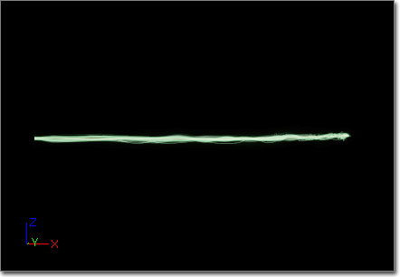
Beam (빔)
Always On (항상 켬) - 참이면 이미터에는 항상 살아있는 파티클이 있습니다.
Beam Method (빔 방법) - 빔 생성법을 설정할 수 있게 해 주는 열거형입니다. 다음 중 하나입니다:
Interpolation Points (보간 지점) - 빔에 걸친 커브 보간에 소스 및 타겟 탄젠트를 빔에 사용할지 여부를 나타냅니다. 이 값이 0 이하면 빔은 소스와 타겟 사이에서 직선이(보간이 없게) 됩니다. 값이 0보다 크면 소스와 타겟 사이의 경로를 각각의 탄젠트 값을 활용하여 결정합니다. 그 도중 사용할 단 수는 이 속성에 설정되는 값이 됩니다.
Max Beam Count (최대 빔 수) - 이미터가 가질 수 있는 살아있는 빔의 최대 수입니다.
Sheets (시트) - 빔에 걸쳐 렌더링할 시트 수입니다. 시트는 빔 경로에 고르게 분포됩니다. 예를 들어 축을 내려다 보고 있고, 빔은 내려가는 중인 경우 크로스에는 2 시트면 됩니다.
Speed (속도) - 빔을 쐈을 때 소스에서 타겟까지 이동할 속도입니다. 값을 0으로 설정하면 빔은 소스에서 타겟까지 즉시 점프합니다.
Texture Tile (텍스처 타일) - 빔을 따라 텍스처를 타일링할 횟수입니다. 현재 미구현 상태입니다.
Texture Tile Distance (텍스처 타일 거리) - 소스 텍스처의 타일 하나를 나타내는 빔상의 거리입니다.
Up Vector Step Size (업 벡터 증감 크기) - 빔에 대한 업 벡터를 결정하는 데 사용할 접근법입니다.
| 방법 | 설명 |
|---|---|
| PEB2M_Distance (파이빔2법_거리) | 이미터의 X축을 따라 빔을 내뿜기 위해 거리 속성을 사용합니다. |
| PEB2M_Target (파이빔2법_대상) | 이미터 원본에서부터 지정된 대상까지 빔을 내뿜습니다. |
| PEB2M_Branch (파이빔2법_분기) | 현재 미사용. |
| 값 | 방법 |
|---|---|
| 0 | 빔의 모든 점에서 업 벡터를 계산합니다. |
| 1 | 빔의 시작점과 사용되는 점에서 업 벡터를 계산합니다. |
| N | N 점마다 업 벡터를 계산한 다음 그 사이를 보간합니다. 주: 현재 지원되지 않는 방법입니다. |
Branching (분기)
Branch Parent Name (부모 이름 분기) - 현재 미사용.
Distance (거리)
Distance (거리) - BeamMethod가 PEB2M_Distance로 설정됐을 때 빔이 이동해야 할 X축 상의 거리를 나타내는 플로트 분포입니다.
Rendering (렌더링)
Render Geometry (지오메트리 렌더) - 참이면 빔의 실제 지오메트리가 렌더링됩니다. 다른 식으로는 트레일을 볼 수가 없기에 이 옵션은 보통 켜 둡니다.
Render Direct Line (직선 렌더) - 참이면 빔의 소스와 타겟 사이에 직선이 렌더링됩니다. 캐스케이드에서 버그잡이에 사용됩니다.
Render Lines (선 렌더) - 참이면 빔의 각 세그먼트마다 선이 렌더링됩니다. 캐스케이드에서 버그잡이에 사용됩니다.
Render Tessellation (테셀레이션 렌더) - 참이면 소스와 타겟 사이의 모자이크화된 경로가 렌더링됩니다. 캐스케이드에서 버그잡에에 사용됩니다.
Taper (테이퍼)
Taper Method (테이퍼 방법) - 빔의 길이에 따른 테이퍼링(점점 가늘어지는) 방법입니다. 다음 값 중 하나입니다:
Taper Factor (테이퍼 인수) - 빔을 테이퍼링시킬 양을 나타내는 분포값입니다. 상수 커브를 사용할 때, 시간 값 0.0은 빔의 소스 위치의 테이퍼를 나타내며, 1.0은 타겟 위치를 나타냅니다.
Taper Scale (테이퍼 스케일) - 테이퍼링의 스케일을 조절할 값입니다. 최종 사용되는 테이퍼 값은 Taper = (TaperFactor * TaperScale) 입니다. 일부러 이렇게 한 일차적 이유는, 빔의 테이퍼링 스케일 인수를 게임 코드에서 용도에 맞게끔 설정할 수 있도록 파티클 파라미터 분포로 사용하기 위함입니다.
| 방법 | 설명 |
|---|---|
| PEBTM_None (파이빔테법_없음) | 빔에 테이퍼링을 적용하지 않습니다. |
| PEBTM_Full (파이빔테법_전체) | 현재 빔 길이와 상관없이 소스에서 타겟으로 이동할 수록 상대적으로 빔을 가늘게 합니다. |
| PEBTM_Partial (파이빔테법_부분) | 현재 미사용. |
Mesh 타입데이터
Mesh(메시) 타입 데이터 모듈이란 이미터가 스프라이트 파티클이 아닌 스태틱 메시 인스턴스를 사용한다는 것을 가리킵니다. 메시 타입데이터 모듈에는 다음과 같은 속성이 있습니다:
CameraFacing (카메라 방향)
Apply Particle Rotation As Spin (파티클 로테이션을 스핀으로 적용) - 참이면 '스프라이트' 파티클 로테이션이 메시에 적용될 때 오리엔테이션 축(메시가 가리키는 방향)을 중심으로 적용됩니다. 아니면 카메라가 향하는 축을 중심으로 적용됩니다.
Camera Facing (카메라 방향) - 참이면 메시의 X축은 항상 카메라를 향합니다. Axis Lock Option (축 잠금 옵션)이나 기타 축/화면 정렬 세팅도 무시됩니다.
Camera Facing Option (카메라 방향 옵션) - 카메라 방향 옵션을 켰을 때 메시를 기준잡는 방법을 정합니다. 가능한 옵션은:
주: 모든 잠긴축 카메라 방향 옵션은 Axis Lock Option 이 설정되었다고 간주합니다. EPAL_NONE은 EPAL_X로 간주됩니다.
주: 모든 속도정렬 옵션은 Screen Alignment 를 PSA_Velocity로 설정하지 않아도 됩니다. 그래버리면 잔업을 해버립니다. (메시를 두 번 죽이는 거에요~)
| 옵션 | 설명 |
|---|---|
| XAxisFacing_NoUp (X축방향_노업) | 메시의 로컬 X축은 카메라를 향하고, 다른 축은 위나 아래로 향하게 하지 않습니다. |
| XAxisFacing_ZUp (X축방향_Z업) | 메시의 로컬 X축은 카메라를 향하고, 메시의 로컬 Z축은 위로 (월드 양성 Z축으로) 향하게 합니다. |
| XAxisFacing_NegativeZUp (X축방향_음성Z업) | 메시의 로컬 X축은 카메라를 향하고, 메시의 로컬 Z축은 아래로 (월드 음성 Z축으로) 향하게 합니다. |
| XAxisFacing_YUp (X축방향_Y업) | 메시의 로컬 X축은 카메라를 향하고, 메시의 로컬 Y축은 위로 (월드 양성 Z축으로) 향하게 합니다. |
| XAxisFacing_NegativeYUp (X축방향_음성Y업) | 메시의 로컬 X축은 카메라를 향하고, 메시의 로컬 Y축은 아래로 (월드 음성 Z축으로) 향하게 합니다. |
| LockedAxis_ZAxisFacing (잠긴축_Z축방향) | 메시의 로컬 X축은 Axis Lock Option 축 상에 잠기고, 메시의 로컬 Z축은 카메라쪽을 향하게 회전됩니다. |
| LockedAxis_NegativeZAxisFacing (잠긴축_음성Z축방향) | 메시의 로컬 X축은 Axis Lock Option 축 상에 잠기고, 메시의 로컬 Z축은 카메라 반대쪽을 향하게 회전됩니다. |
| LockedAxis_YAxisFacing (잠긴축_Y축방향) | 메시의 로컬 X축은 Axis Lock Option 축 상에 잠기고, 메시의 로컬 Y축은 카메라쪽을 향하게 회전됩니다. |
| LockedAxis_NegativeYAxisFacing (잠긴축_음성Y축방향) | 메시의 로컬 X축은 Axis Lock Option 축 상에 잠기고, 메시의 로컬 Y축은 카메라 반대쪽을 향하게 회전됩니다. |
| VelocityAligned_ZAxisFacing (속도정렬_Z축방향) | 메시의 로컬 X축은 속도쪽으로 정렬하고, 메시의 로컬 Z축은 카메라쪽을 향하게 회전됩니다. |
| VelocityAligned_NegativeZAxisFacing (속도정렬_음성Z축방향) | 메시의 로컬 X축은 속도쪽으로 정렬하고, 메시의 로컬 Z축은 카메라 반대쪽을 향하게 회전됩니다. |
| VelocityAligned_YAxisFacing (속도정렬_Y축방향) | 메시의 로컬 X축은 속도쪽으로 정렬하고, 메시의 로컬 Y축은 카메라쪽을 향하게 회전됩니다. |
| VelocityAligned_NegativeYAxisFacing (속도정렬_음성Y축방향) | 메시의 로컬 X축은 속도쪽으로 정렬하고, 메시의 로컬 Y축은 카메라 반대쪽을 향하게 회전됩니다. |
Mesh (메시)
Allow Motion Blur (모션 블러 허용) - 참이면 요 이미터에서 나오는 메시는 모션 블러링됩니다. 속도 렌더링 패스가 추가됩니다.
Mesh (메시) - 이미터의 파티클 위치에 렌더링되는 스태틱 메시입니다.
Mesh Alignment (메시 정렬) - 메시를 렌더링할 때 사용할 정렬법입니다. 이 속성 덕을 보려면 Required 모듈의 Screen Alignment 속성을 꼭 PSA_TypeSpecific 으로 설정해야 합니다. 제공되는 옵션은 다음과 같습니다:
Override Material (머티리얼 덮어쓰기) - 참이면 스태틱 메시 모델에 적용된 머티리얼이 아닌 (Required 모듈에 할당된) 이미터의 머티리얼을 사용하여 메시를 렌더링합니다. 머티리얼을 할당해 줘야 하는 메시에 UV 채널이 여럿 필요한 경우, 또는 코드용 머티리얼 할당을 파라미터화 해야하는 경우, 메시 머티리얼 모듈에 쓰기 좋은 옵션 되겠습니다.
| 옵션 | 설명 |
|---|---|
| PSMA_MeshFaceCameraWithRoll (파시메정_롤 허용하고 메시 방향 카메라) | 메시-투-카메라 벡터를 중심으로 회전(량은 표준 파티클 스프라이트 회전으로 제공됨)하도록 허용하면서 카메라를 향하게 합니다. |
| PSMA_MeshFaceCameraWithSpin (파시메정_스핀 허용하고 메시 방향 카메라) | 메시가 접선축을 중심으로 회전하도록 허용하면서 카메라를 향하게 합니다. |
| PSMA_MeshFaceCameraWithLockedAxis (축 잠그고 메시 방향 카메라) | 업 벡터를 잠긴 방향으로 유지하면서 카메라를 향하게 합니다. |
Orientation (오리엔테이션)
Axis Lock Option (축 잠금 옵션) - 메시를 잠글 축입니다. TypeSpecific 메시 정렬과 LockAxis 모듈을 덮어씁니다. 제공되는 옵션은 다음과 같습니다:
Pitch (핏치) - 사용되는 스태틱 메시에 적용할 '미리' 회전 핏치(각도)입니다.
Roll (롤) - 사용되는 스태틱 메시에 적용할 '미리' 회전 롤(각도)입니다.
Yaw (요) - 사용되는 스태틱 메시에 적용할 '미리' 회전 요(각도)입니다.
| 옵션 | 설명 |
|---|---|
| EPAL_NONE (파축잠_없음) | 축 잠금 이상 무! |
| EPAL_X (파축잠_X) | 메시 X축이 +X를 향하도록 잠급니다. |
| EPAL_Y (파축잠_Y) | 메시 X축이 +Y를 향하도록 잠급니다. |
| EPAL_Z (파축잠_Z) | 메시 X축이 +Z를 향하도록 잠급니다. |
| EPAL_NEGATIVE_X (파축잠_음성_X) | 메시 X축이 -X를 향하도록 잠급니다. |
| EPAL_NEGATIVE_Y (파축잠_음성_Y) | 메시 X축이 -Y를 향하도록 잠급니다. |
| EPAL_NEGATIVE_Z (파축잠_음성_Z) | 메시 X축이 -Z를 향하도록 잠급니다. |
| EPAL_ROTATE_X (파축잠_회전_X) | 메시 이미터에는 무시되어 EPAL_NONE으로 간주됩니다. |
| EPAL_ROTATE_Y (파축잠_회전_Y) | 메시 이미터에는 무시되어 EPAL_NONE으로 간주됩니다. |
| EPAL_ROTATE_Z (파축잠_회전_Z) | 메시 이미터에는 무시되어 EPAL_NONE으로 간주됩니다. |
PhysX 메시 타입데이터
PhysX 메시 타입 데이터 모듈은 파티클을 회전하는 메시로 표시하는 데 사용할 수 있습니다. 파편이나 나뭇잎처럼 작고 간단한 오브젝트를 흉내내기에 적당합니다. 요 이미터 종류는 대규모 파티클 이펙트를 가능하게 하기 위해 빠른 인스턴스된 렌더링 경로를 통해 최적화되었습니다. PhysX 메시 타입 데이터 모듈에서 찾아볼 수 있는 속성 대부분은 표준 메시 타입 데이터 모듈과 겹칩니다. 겹치는 속성에 대한 설명은 메시 타입데이터 부분을 참고하시기 바랍니다. PhysX 메시 타입 데이터 모듈에는 다음과 같은 속성이 있습니다:
Fluid Rotation Coefficient (유동적 회전 계수) - 선형 속도 또는 콜리전으로부터의 파티클 메시 회전량을 정의합니다.
PhysX Par Sys (PhysX 파 시) - 요 이미터용 파티클을 흉내내는 데 사용되는 PhysX 파티클 시스템 애셋입니다.
PhysX Rotation Method (PhysX 회전 방법) - 파티클을 사용하는 작고 다양한 모양의 오브젝트 회전을 흉내내는 데 사용되는 방법을 결정합니다. 파티클 메시의 기본 모양 기능을 반영하는 방법을 선택합니다.
Vertical Lod (세로 Lod) - 전역 EmitterLodControl(이미터 LOD 콘트롤)용 파라미터입니다.
PhysX 파티클 시스템 사용에 관련된 상세 정보는, PhysX 파티클 시스템 참고서 확인을 바랍니다.
| Relative Fadeout Time (상대적 페이드아웃 기간) | 파티클 수명의 부분으로 설정해야 하며, 파티클을 그래픽적으로 페이드아웃시키는 데 사용됩니다. LOD 시스템 파티클은 바로 지워지기보다 천천히 사라지게 됩니다. |
| Spawn Lod Rate Vs Life Bias (LOD 스폰율 대 수명 편향) | 방출 비율이나 파티클 수명을 줄이는 데 대한 스포닝 볼륨의 영향력을 정의합니다. |
| Weight For Fifo (FIFO용 가중치) | 오래된 파티클을 제거하는 데 관련된 이미터 효과용 상대 가중치입니다. 상대적으로 값이 낮으면 가능한 경우 시스템이 다른 이미터로부터의 파티클을 삭제하게 합니다. |
| Weight For Spawn Lod (스폰 LOD용 가중치) | 방출 볼륨 감소에 관계됐다는 점만 빼고는 Weight For Fifo 와 같습니다. |
PhysX 스프라이트 타입데이터
PhysX 스프라이트 타입 데이터는 피직스 시뮬레이션을 사용하는 모든 종류의 스프라이트 파티클 애니메이션을 PhysX 파티클 시스템을 통해 구동할 수 있는 모듈입니다. PhysX 스프라이트 데이터 모듈에는 다음과 같은 속성이 있습니다:
PhysX Par Sys (PhysX 파 시) - 요 이미터에 대한 파티클을 흉내내는 데 사용되는 PhysX 파티클 시스템 애셋입니다.
Vertical Lod (세로 LOD) - 전역 EmitterLodControl(이미터 LOD 콘트롤)용 파라미터입니다.
| Relative Fadeout Time (상대적 페이드아웃 기간) | 파티클 수명의 부분으로 설정해야 하며, 파티클을 그래픽적으로 페이드아웃시키는 데 사용됩니다. LOD 시스템 파티클은 바로 지워지기보다 천천히 사라지게 됩니다. |
| Spawn Lod Rate Vs Life Bias (LOD 스폰율 대 수명 편향) | 방출 비율이나 파티클 수명을 줄이는 데 대한 스포닝 볼륨의 영향력을 정의합니다. |
| Weight For Fifo (FIFO용 가중치) | 오래된 파티클을 제거하는 데 관련된 이미터 효과용 상대 가중치입니다. 상대적으로 값이 낮으면 가능한 경우 시스템이 다른 이미터로부터의 파티클을 삭제하게 합니다. |
| Weight For Spawn Lod (스폰 LOD용 가중치) | 방출 볼륨 감소에 관계됐다는 점만 빼고는 Weight For Fifo 와 같습니다. |
Ribbon 타입데이터
Ribbon(리본) 타입 데이터는 이미터가 (파티클과 연결되어 리본을 형성하는) 트레일(흔적)을 출력할지를 나타내는 모듈입니다. 리본 타입 데이터에는 다음과 같은 속성이 있습니다:
Rendering (렌더링)
Distance Tessellation Step Size (거리 테셀레이션 단계 크기) - 트레일용 테셀레이션 지점간의 거리입니다. 트레일에 테셀레이션 지점을 몇이나 만들 지, 즉 트레일이 얼마나 부드러울지를 결정하는 데 쓰입니다. 정확한 계산식은:
TessellationPoints = Trunc((Distance Between Spawned Particles) / (DistanceTessellationStepSize)) /* 테셀레이션 지점 = 소수점버림 ((스폰된 파티클간의 거리) / (거리 테셀레이션 단계 크기))Render Geometry (지오메트리 렌더) - 참이면 트레일 지오메트리가 렌더링됩니다. 다른 방법으로는 트레일을 켤 수가 없이기 보통 켜 놓습니다. Render Spawn Points (스폰 지점 렌더) - 참이면 트레일 상의 각 스폰된 파티클 지점 위치에 별이 렌더링됩니다. 캐스케이드에서 벌레잡이용으로 사용됩니다. Render Tangents (탄젠트 렌더) - 참이면 트레일 상의 각 스폰된 파티클 지점에 있는 탄젠트는 선을 사용하여 렌더링됩니다. 케스케이드에서 벌레잡이용으로 사용됩니다. Render Tessellation (테셀레이션 렌더) - 참이면 각 스폰된 파티클 사이의 테셀레이션 경로가 렌더링됩니다. 캐스케이드에서 벌레잡이용으로 사용됩니다. Tangent Tessellation Scalar (탄젠트 테셀레이션 스케일러) - 테셀레이션용 탄젠트 스케일러입니다. 탄젠트 A와 B 사이의 각도는 [0.0f .. 1.0f] 범위로 매핑됩니다. 그리고서 여기에다 TangentTessellationScalar (탄젠트 테셀레이션 스케일러)값을 곱해 테셀레이트할 점 수를 냅니다. Tiling Distance (타일링 거리) - 둘째 UV 세트를 타일링할 (추정) 커버된 거리입니다. 0.0이면 둘째 UV 세트는 전달되지 않습니다.
Spawn (스폰)
Tangent Spawning Scalar (탄젠트 스폰 스케일러) - 스폰용 탄젠트 스케일러입니다. 탄젠트 A와 B 사이의 각도가 [0.0f .. 1.0f] 범위로 매핑됩니다. 그리고서 여기에다 Tangent Spawning Scalar (탄젠트 스폰 스케일러) 값을 곱해 스폰시킬 파티클 수를 냅니다.
Trail (트레일)
Clip Source Segment (소스 부분 고정) - 참이면 트레일은 소스 위치로 합쳐지지 않습니다.
Dead Trails On Deactivate (비활성화시 트레일 죽임) - 참이면 파티클 시스템이 비활성화될 때 트레일도 죽은 것으로 마트합니다. 즉 트레일이 계속 렌더링되긴 하지만, 파티클 시스템을 다시 활성화시켜도 파티클이 새로 스폰되지는 않는다는 뜻입니다.
Dead Trails On Source Loss (소스 손실시 트레일 죽임) - 참이면 트레일 소스를 '잃었을' 때, 즉 소스 파티클이 죽거나 했을 때 트레일을 죽은 것으로 마크합니다.
Enable Previous Tangent Recalculation (예전 탄젠트 재계산 켜기) - 참이면 파티클이 새로 스폰될 때마다 예전 탄젠트를 재계산합니다.
Max Particle In Trail Count (최대 트레일 내 파티클 수) - 트레일이 한 번에 포함할 수 있는 파티클의 최대 수입니다.
Max Trail Count (최대 트레일 수) - 살아있는 트레일 수 허용치입니다.
Render Axis (렌더 축) - 트레일(이 걸쳐있는)용 '렌더' 축입니다. 제공되는 옵션은 다음과 같습니다:
Sheets Per Trail (트레일당 시트) - 트레일 렌더링을 위해 트레일 길이를 중심으로 회전시킨 시트의 수입니다.
Tangent Recalculation Every Frame (매 프레임마다 탄젠트 재계산) - 참이면 속도/가속도 적용을 허용하기 위해 매 프레임마다 모든 탄젠트를 재계산합니다.
| Trails_CameraUp (트레일_카메라업) | 전통적인 카메라 방향 트레일입니다. |
| Trails_SourceUp (트레일_소스업) | 각 스폰되는 파티클에 대한 소스의 윗축을 사용합니다. |
| Trails_WorldUp (트레일_월드업) | 월드 윗축을 사용합니다. |
모듈 유형
모듈 유형은 그 기본 함수성에 따라 분류할 수 있습니다.Acceleration 모듈
Acceleration(가속도)는 파티클에다 가속도 혹은 시간에 따른 속도의 변화를 적용시킬 수 있는 모듈입니다.Acceleration
(커서를 올리면 움직입니다.)

Acceleration
Acceleration (가속도) - 사용할 가속도를 가리키는 벡터 분포. 이 값은 파티클이 새로 만들어질 때의 EmitterTime(이미터 시간)을 기준으로 정해집니다.
Apply Owner Scale (오너 스케일 적용) - 참이면 파티클 시스템 컴포넌트의 스케일값에 가속도를 곱합니다.
파티클 페이로드 데이터인 UsedAcceleration (사용된 가속도)에 벡터 파라미터를 추가하는 모듈입니다. 각 파티클의 수명에 걸친 가속도를 유지하는 데 사용되는 값입니다.
각 프레임마다 파티클의 현재 및 기본 속도값이 (속도 += 가속도 * 경과시간) 공식을 사용하여 업데이트되는데, 경과시간(DeltaTime)이란 지난 프레임 이후 경과된 기간을 말합니다.
AccelerationOverLife
파티클 수명에 걸친 가속도를 설정합니다. 다음과 같은 멤버를 포함합니다:
Acceleration (가속도)
Accel Over Life (수명에 걸친 가속) - 사용할 가속도를 가리키는 벡터 분포입니다. 파티클 업데이트시 RelativeTime (상대 시간)에 따라 값이 구해집니다.
Always In World Space (항상 월드 공간에) - 참이면 가속도 벡터는 월드 공간 좌표내에 있는 것으로 간주됩니다. 아니면 파티클 시스템 컴포넌트에 상대적인 로컬 공간에 있는 것으로 간주됩니다.
가속도는 Particle.RelativeTime 을 사용하는 Acceleration 분포로부터 구합니다. 파티클의 현재 및 기본 속도값은 (속도 += 가속도 * 경과시간) 공식을 사용하여 업데이트되는데, 경과시간(DeltaTime)이란 지난 프레임 이후 경과된 기간을 말합니다.
Attractor 모듈
Attractor(끌개)는 파티클을 점이나 선 또는 다른 파티클의 위치 형태로 정의할 수 있는 공간 내 특정 위치로 끌어당기는 것을 구현하기 위한 모듈입니다. 좀 더 복잡한 효과를 내기 위해 조합도 가능합니다. 소용돌이 효과를 내기 위해 파티클의 수명에 걸쳐 그 세기가 변하는 선 끌개와 점 끌개를 조합해서 사용한 결과입니다. (커서를 올리면 움직입니다.)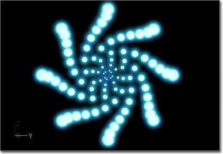

Attractor Line
라인 어트랙터는 파티클이 3D 공간에 선을 그릴 수 있게 해 줍니다.
Attractor (끌개)
End Point 0 (끝점 0) - 파티클을 끌어당길 선의 한쪽 끝지점을 지정합니다.
End Point 1 (끝점 1) - 파티클을 끌어당길 선의 다른쪽 끝지점을 지정합니다.
Range (범위) - 선 주변의 인력 반경 범위를 나타내는 플로트 분포입니다. 파티클-수명에 상대적입니다.
Strength (세기) - 인력의 세기입니다. (음수값은 밀어냅니다.) 파티클-수명에 상대적입니다.
Attractor Particle
(커서를 올리면 움직입니다.)
Attractor (끌개)
Affect Base Velocity (기본 속도 영향) - 참이면 속도 조절시 기본 속도에도 적용됩니다.
EmitterName (이미터 이름) - 끌어당기는 소스 이미터의 이름입니다.
Inherit Source Vel (소스 속도 상속) - 참이면 소스가 사라질 때의 속도를 파티클이 상속합니다.
Range (범위) - 소스 파티클 주변의 인력 반경 범위를 나타내는 플로트 분포입니다. 파티클-수명 상대적입니다.
Renew Source (소스 새로이) - 참이면 소스 파티클이 사라질 때 새로운 것이 선택됩니다. 아니면 파티클은 더이상 다른 것에 끌리지 않습니다.
Strength (세기) - 인력의 세기입니다. (음수값은 밀어냅니다.) Strength By Distance (거리별 세기)값이 거짓이면 파티클-수명 상대적입니다.
Strength By Distance (거리별 세기) - 참이면 다음 공식을 사용하여 세기 곡선의 값을 구합니다: (AttractorRange-DistanceToParticle)/AttractorRange. (어트랙터 범위 - 파티클까지의 거리) / 어트랙터 범위. 아니면 소스 파티클의 RelativeTime(상대 시간)에서 세기를 구합니다.
Location (위치)
SelectionMethod (선택법) - 이미터로부터의 어트랙터 타겟 파티클을 선택할 때 사용할 방법입니다. 다음 중 하나입니다:
| 방법 | 설명 |
|---|---|
| EAPSM_Random (어파선법_랜덤) | 소스 이미터에서 파티클을 임의로 선택합니다. |
| EAPSM_Sequential (어파선법_순차) | 파티클을 순서대로 선택합니다. |
Attractor Point
(커서를 올리면 움직입니다.)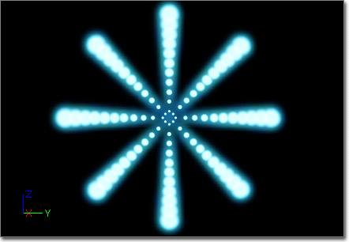
Attractor (끌개)
Affect Base Velocity (기본 속도 영향) - 참이면 어트랙터의 인력을 유지하기 위해 파티클의 기본 속도가 조절됩니다.
Override Velocity (속도 덮어쓰기) - 미사용.
Position (포지션) - 파티클 이미터에 관련된 점의 위치를 가리키는 벡터 분포입니다. EmitterTime(이미터 시간)을 사용해서 값을 구합니다.
Range (범위) - 점의 영향 범위 반경을 내는 플로트 분포입니다. EmitterTime(이미터 시간)을 사용하여 값을 구합니다.
Strength (세기) - 포인트 어트랙터의 세기입니다. EmitterTime(이미터 시간)을 사용하여 값을 구합니다.
Strength By Distance (거리별 세기) - 참이면 세기가 반경에 따라 고르게 나뉩니다.
Use World Space Position (월드 공간 위치 사용) - 참이면 위치가 월드 공간 좌표상에 있는 것으로 간주합니다.
Beam 모듈
빔 타입데이터 모듈을 사용하는 이미터의 작동방식을 환경설정하거나 변경하는 데 사용되는 모듈입니다.Beam Modifier
빔 모디파이어는 빔의 소스나 타겟의 변경이 가능합니다. 다음과 같은 속성이 제공됩니다:
Modifier (변경자)
Modifier Type (모디파이어 타입) - 모듈이 변경하는 것을 지정합니다.
| 유형 | 설명 |
|---|---|
| PEB2MT_Source (파이빔2모타_소스) | 빔의 소스를 변경하는 모듈입니다. |
| PEB2MT_Target (파이빔2모타_타겟) | 빔의 타겟을 변경하는 모듈입니다. |
Position (위치)
Position (위치) - 소스/타겟 위치의 변경에 사용되는 값입니다.
Position Options (위치 옵션) - Position 속성과 연결되는 옵션입니다.
| 옵션 | 설명 |
|---|---|
| Lock (잠금) | 참이면 소스/타겟의 위치가 파티클 수명동안 잠깁니다. |
| Modify (변경) | 참이면 소스/타겟의 위치가 변경됩니다. 아니면 영향받지 않습니다. |
| Scale (스케일) | 참이면 소스/타겟의 위치가 모디파이어 모듈의 Position 값에 의해 스케일됩니다. 아니면 소스/타겟의 위치를 덮어씁니다. |
Strength (세기)
Strength (세기) - 소스/타겟의 세기를 변경하는 데 사용되는 세기값입니다.
Strength Options (세기 옵션) - Strength 속성에 연결된 옵션입니다.
| 옵션 | 설명 |
|---|---|
| Lock (잠금) | 참이면 소스/타겟의 세기가 파티클 수명동안 잠깁니다. |
| Modify (변경) | 참이면 소스/타겟의 세기가 변경됩니다. 아니면 영향받지 않습니다. |
| Scale (스케일) | 참이면 소스/타겟의 세기가 모디파이어 모듈의 Strength 값에 의해 스케일됩니다. 아니면 소스/타겟의 세기를 덮어씁니다. |
Tangent (탄젠트)
Tangent (탄젠트) - 소스/타겟의 탄젠트를 변경하는 데 사용되는 값입니다.
Tangent Options (탄젠트 옵션) - Tangent 속성에 연결된 옵션입니다.
| 옵션 | 설명 |
|---|---|
| Lock (잠금) | 참이면 소스/타겟의 탄젠트가 파티클 수명동안 잠깁니다. |
| Modify (변경) | 참이면 소스/타겟의 탄젠트가 변경됩니다. 아니면 영향받지 않습니다. |
| Scale (스케일) | 참이면 소스/타겟의 탄젠트가 모디파이어 모듈의 Tangent 값에 의해 스케일됩니다. 아니면 소스/타겟의 탄젠트를 덮어씁니다. |
Beam Noise
(커서를 올리면 움직입니다.)
LowFreq (저빈도)
Apply Noise Scale (노이즈 스케일 적용) - 참이면 NoiseScale(노이즈 스케일)을 빔에다 적용합니다.
Frequency (빈도) - 빔 상의 노이즈 점 빈도입니다.
FrequencyDistance (빈도 거리) - 노이즈 점을 놓을 거리입니다. 값이 0.0이면 표준 Frequency/Frequency_LowRange (빈도 / 빈도_저범위) 쌍을 사용하여 노이즈 점의 빈도를 결정합니다. 0.0이 아니면 지정된 정적 Frequencuy(빈도)값까지의 거리까지 노이즈 점이 분산됩니다.
Frequency_Low Range (빈도_저범위) - 0보다 크면 빈도에 대한 하한선 값을 나타냅니다. 파티클의 스폰 시간에 그 빈도는 [Frequency_LowRange..Frequency] 범위로 설정됩니다.
Low Freq_Enabled (저빈도_켜기) - 참이면 저빈도 노이즈를 켭니다.
주: 현재 지원되는 노이즈는 저빈도 노이즈가 유일합니다.
Noise Lock Radius (노이즈 잠금 반경) - 잠김 범위를 나타내는 노이즈 점 주변 구체의 반경입니다.
Noise Lock Time (노이즈 잠금 시간) - 노이즈 점을 하나 찍고 나서 다시 찍을 때까지 대기할 기간입니다.
Noise Range (노이즈 범위) - 노이즈 점 위치의 범위를 나타내는 분포입니다. 상수 커브를 사용하면 시간 0.0f 에 대한 매핑은 첫째 점이고, 시간 1.0은 타겟 점이 됩니다. 나머지 점은 (CurrentFrequencyPoint * (1.0/TotalFrequencyPoints)) (현재 빈도 점 * (1.0 / 총 빈도 점)) 공식을 사용하여 찾습니다.
Noise Range Scale (노이즈 범위 스케일) - 이미터 시간에 걸친 노이즈 범위 스케일 방법을 제공하기 위한 분포입니다.
Noise Scale (노이즈 스케일) - bApplyNoiseScale(노이즈 스케일 적용여부)값이 참일 때 노이즈 범위에 적용하기 위한 스케일 인수입니다. 이 분포가 찾아볼 값은 현재 노이즈 점 수를 최대 노이즈 점(예로 Frequency) 수로 나눠 결정됩니다.
Noise Speed (노이즈 속도) - 노이즈 점이 움직이는 속도를 제공하기 위한 벡터 분포입니다.
Noise Tangent Strength (노이즈 탄젠트 세기) - 빔을 보간하는 도중 노이즈 점에 있는 탄젠트(접선)에 적용할 세기입니다.
Noise Tension (노이즈 장력) - 테셀레이트된 노이즈 선에 적용할 장력입니다.
Noise Tessellation (노이즈 테셀레이션) - 노이즈 점간의 보간에 사용할 점 수입니다.
NRScale Emitter Time (노레스케일 이미터 시간) - 참이면 NoiseRangeScale(노이즈 범위 스케일) 결과는 이미터 시간을 사용하여 구합니다. 거짓이면 파티클 시간을 사용하여 구합니다.
Oscillate (진동) - 참이면 빔 직선에 걸쳐 노이즈 점이 앞뒤로 튀게 됩니다.
Smooth (부드럽게) - 참이면 노이즈 점간에 부드럽게 이동해 봅니다.
Target Noise (타겟 노이즈) - 참이면 타겟 점에 노이즈를 적용합니다.
Use Noise Tangents (노이즈 탄젠트 사용) - 참이면 각 노이즈 점에마다 접선이 계산됩니다. 미사용.
Beam Source
빔 소스는 빔 이미터에 대한 단일 소스를 구현하는 모듈입니다. (소스 모듈이 빔 이미터에 있지 않은 경우, 이미터 위치 자체가 소스로 사용됩니다.) 다음과 같은 속성이 제공됩니다:
Source
Lock Source (소스 잠금) - 참이면 소스 위치는 스폰 시간에만 설정됩니다.
Lock Source Strength (소스 세기 잠금) - 참이면 소스 세기는 스폰 시간에만 설정됩니다.
Lock Source Tangent (소스 탄젠트 잠금) - 참이면 소스 탄젠트는 스폰 시간에만 설정됩니다.
Source (소스) - 소스 위치 설정을 가능케 하는 벡터 분포입니다. 방법이 Default(디폴트)로 설정되었을 때, 또는 다른 방법으로 소스 점을 결정하지 못했을 때 사용됩니다. 현재 이미터 시간을 사용하는 분포로부터 값이 구해집니다.
Source Absolute (소스 절대) - 참이면 소스를 월드 스페이스의 절대 위치로 간주하(고 변형하지 않스)ㅂ니다.
Source Method (소스 방법) - 빔의 소스 위치를 구하는 방법을 설정하기 위한 열거형입니다. 다음 중 하나가 가능합니다:
Source Name (소스 이름) - 소스로 사용할 액터의 이름입니다. SourceMethod(소스 방법)이 PEB2STM_Actor (액터)로 설정되었을 때만 사용됩니다. 액터를 찾을 수 없는 경우 예비로 소스 분포를 사용합니다.
Source Strength (소스 세기) - 각 빔에 대한 소스 점으로부터의 탄젠트 세기를 제공해 주는 플로트 분포입니다. 현재 이미터 시간을 사용하여 값을 구합니다. Source/SourceTangent (소스/소스 탄젠트)를 구하는 데 사용되는 방법에 관계없이 이 세기가 사용됩니다.
Source Tangent (소스 탄젠트) - 소스 탄젠트 설정용 벡터 분포입니다. SourceTangentMethod (소스 탄젠트 방법)이 PEB2STTM_Distribution (분포)로 사용되었을 때만 사용됩니다. 현재 이미터 시간값을 사용해서 값을 구합니다.
Source Tangent Method (소스 탄젠트 방법) - 빔의 소스 탄젠트를 구하는 방법을 설정하기 위한 열거형입니다. 다음 중 하나가 가능합니다:
| 방법 | 설명 |
|---|---|
| PEB2STM_Default (파이빔2소타법_디폴트) | 소스 분포를 사용합니다. |
| PEB2STM_UserSet (파이빔2소타법_유저설정) | 유저 설정값을 사용합니다. |
| PEB2STM_Emitter (파이빔2소타법_이미터) | 소스로 이미터 위치를 사용합니다. |
| PEB2STM_Particle (파이빔2소타법_파티클) | 현재 미사용. |
| PEB2STM_Actor (파이빔2소타법_액터) | 지정된 이름의 액터 위치를 사용합니다. |
| 방법 | 설명 |
|---|---|
| PEB2STTM_Direct (파이빔2소타탄법_직접) | 소스와 타겟간의 직선을 사용합니다. |
| PEB2STTM_UserSet (파이빔2소타탄법_유저설정) | 유저 설정값을 사용합니다. |
| PEB2STTM_Distribution (파이빔2소타탄법_분포) | SourceTangent(소스 탄젠트) 분포로부터의 값을 사용합니다. |
| PEB2STTM_Emitter (파이빔2소타탄법_이미터) | 이미터가 향하는 방향을 사용합니다. |
Beam Target
빔 타겟은 빔 이미터에 대한 단일 타겟을 구현하는 모듈입니다. (빔 이미터에 타겟 모듈이 있지 않은 경우, 이미터는 빔이 직접적으로 사용된다고 간주합니다.) 포함하는 속성은 다음과 같습니다:
Target (타겟)
Lock Radius (반경 잠금) - 타겟 점으로 잠긴 것으로 간주되기 위해 현재 빔 끝이 포함되어야 하는 구체의 범위입니다. Speed(속도)값이 설정된 빔을 활용할 때 사용합니다.
Lock Target (타겟 잠금) - 참이면 타겟 위치는 스폰 시간에만 설정됩니다.
Lock Target Strength (타겟 세기 잠금) - 참이면 타겟 세기는 스폰 시간에만 설정됩니다.
Lock Target Tangent (타겟 탄젠트 잠금) - 참이면 타겟 탄젠트는 스폰 시간에만 설정됩니다.
Target (타겟) - 타겟 위치의 설정을 가능케 하는 벡터 분포입니다. 방법이 Default(디폴트)로 설정되었을 때, 다른 방법으로 타겟 점을 결정하지 못했을 때 사용됩니다. 현재 이미터 시간을 사용하는 분포로부터 값을 구합니다.
Target Absolute (타겟 절대) - 참이면 타겟을 월드 공간의 절대 위치로 간주합(고 변형하지 않습)니다.
Target Method (타겟 방법) - 빔의 타겟 위치 구하기용 방법을 설정하는 열거형입니다. 다음 중 하나가 가능합니다:
주: 이미터나 파티클로 설정해 버리면 타겟은 분포로부터의 값을 사용합니다.
Target Name (타겟 이름) - 타겟으로 사용할 액터 이름입니다. TargetMethod(타겟 방법)이 PEB2STM_Actor (액터)로 설정되었을 때만 사용됩니다. 액터를 찾을 수 없는 경우, 예비로 Target(타겟) 분포를 사용합니다.
Target Strength (타겟 세기) - 각 빔에 대한 타겟 점으로부터의 탄젠트(접선) 세기를 나타내는 플로트 분포입니다. 현재 이미터 시간을 사용하여 값을 구합니다. Target/TargetTangent(타겟/타겟 탄젠트)를 구하는 데 사용되는 방법에 무관하게 사용되는 세기입니다.
Target Tangent (타겟 탄젠트) - 타겟 탄젠트 설정을 허용하는 벡터 분포입니다. TargetTangentMethod(타겟 탄젠트 방법)이 PEB2STTM_Distribution (분포)로 설정되었을 때 사용됩니다. 현재 이미터 시간을 사용하여 값을 구합니다.
Target Tangent Method (타겟 탄젠트 방법) - 빔의 타겟 탄젠트를 구하는 방법을 정할 수 있는 열거형입니다. 다음 중 하나입니다:
| 방법 | 설명 |
|---|---|
| PEB2STM_Default (파이빔2소타법_디폴트) | 타겟 분포를 사용합니다. |
| PEB2STM_UserSet (파이빔2소타법_유저설정) | 유저 설정값을 사용합니다. |
| PEB2STM_Emitter (파이빔2소타법_이미터) | 현재 미지원. |
| PEB2STM_Particle (파이빔2소타법_파티클) | 현재 미지원. |
| PEB2STM_Actor (파이빔2소타법_액터) | 지정된 이름의 액터 위치를 사용합니다. |
| 방법 | 설명 |
|---|---|
| PEB2STTM_Direct (파이빔2소타탄법_직접) | 소스와 타겟간의 직선을 사용합니다. |
| PEB2STTM_UserSet (파이빔2소타탄법_유저설정) | 유저 설정값을 사용합니다. |
| PEB2STTM_Distribution (파이빔2소타탄법_분포) | TargetTangent(타겟 탄젠트) 분포로부터의 값을 사용합니다. |
| PEB2STTM_Emitter (파이빔2소타탄법_이미터) | 이미터가 향하는 방향을 사용합니다. |
Camera 모듈
카메라에 관련된 이미터의 작동방식을 변경하는 모듈입니다.Camera Offset
카메라 오프셋은 스프라이트 파티클의 위치를 카메라에 상대적으로 오프셋시킬 수 있는 모듈입니다. 다음 속성이 포함됩니다:
Camera (카메라)
Camera Offset (카메라 오프셋) - 스프라이트 파티클 위치에 적용할 카메라-대비 오프셋입니다.
Spawn Time Only (스폰시에만) - 참이면 이 모듈로부터의 오프셋은 파티클이 원래 스폰되었을 때만 처리됩니다.
Update Method (업데이트 방법) - 이 모듈로부터의 오프셋을 업데이트할 때 사용할 방법을 지정합니다.
| 방법 | 설명 |
|---|---|
| EPCOUM_Direct (파카오업법_직접) | Camera Offset (카메라 오프셋) 값을 사용하여 직접 오프셋을 설정합니다. 기존 오프셋은 덮어씁니다. |
| EPCOUM_Additive (파카오업법_더하기) | 기존 오프셋에다 이 모듈로부터의 카메라 오프셋 값을 더합니다. |
| EPCOUM_Scalar (파카오업법_스케일러) | 기존 오프셋에다 카메라 오프셋 값으로 스케일 조절합니다. |
Collision 모듈
Collision
(커서를 올리면 움직입니다.)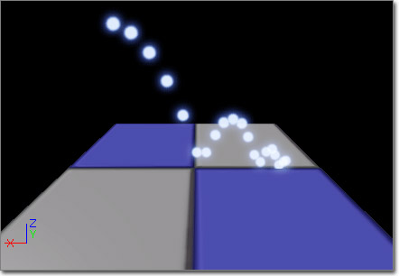
Collision (콜리전)
Apply Physics (피직스 적용) - 파티클과 충돌하는 오브젝트에 물리를 적용할 지 여부를 나타내는 불리언입니다. [주: 현재 이 기능은 파티클 -> 오브젝트 일방향입니다. 파티클에 피직스가 적용되지는 않고, 단지 충돌하는 오브젝트에 충격을 가할 뿐입니다.]
Collision Completion Option (콜리전 완료 옵션) - MaxCollision(최대 콜리전)에 도달했을 때 파티클을 어찌할까를 나타내는 열거형입니다. 다음 중 하나입니다:
Damping Factor (감쇠 인수) - 충돌 이후의 파티클을 얼마나 '느리게' 할 지를 나타내는 벡터 분포입니다. 파티클 스폰시의 EmitterTime(이미터 시간)에 따라 값을 구하며, 파티클 내에 저장합니다.
Damping Factor Rotation (감쇠 인수 회전) - 충돌 이후의 파티클 회전을 얼마나 '느리게' 할 지를 나타내는 벡터 분포입니다. 파티클 스폰시의 이미터 시간에 따라 값을 구하며, 파티클 내에 저장합니다.
Delay Amount (지연 기간) - 파티클의 콜리전 검사 전 대기할 기간입니다. 이미터 시간을 사용하여 값을 구합니다. 업데이트 도중에는 파티클 RelativeTime(상대 시간)이 Delay Amount (지연 기간)만큼 지나기 전까지는 IgnoreCollision(콜리전 무시) 파티클 플랙이 설정됩니다.
Dir Scalar (방향 스케일러) - 상호관통이나 큰 틈을 피하기 위해 '지원할' 파티클의 경계를 스케일하는 데 사용되는 플로트 값입니다.
Max Collisions (최대 콜리전) - 파티클이 가질 수 있는 콜리전의 최대 갯수를 나타내는 플로트 분포입니다. 파티클 스폰시의 이미터 시간에 따라 값을 구합니다.
Only Vertical Normals Decrement Count (세로 노멀 갯수만 치기) - 참이면 세로 힛 노멀을 갖지 않은 콜리전은 반응이야 합니다만 최대 콜리전 갯수로 치지 않습니다. 파티클이 벽에 튕긴 다음 바닥에 놓이게 할 수 있습니다.
Particle Mass (파티클 질량) - bApplyPhysics(피직스 적용 여부)가 참일때 사용할 파티클의 질량을 나타내는 플로트 분포입니다. 파티클의 스폰시 이미터 시간에 따라 값을 구합니다.
Pawns Do Not Decrement Count (폰 갯수는 안치기) - 참이면 폰과의 콜리전은 반응이야 합니다만 최대 콜리전 갯수로 치지 않습니다. 파티클이 폰에 튕긴 다음 허공에서 얼어버리지 않게 할 수 있습니다.
Vertical Fudge Factor (세로 조작 인수) - 뭐가 세로인지 정하는 데 사용되는 플로트 값입니다. 실제 세로는 Hit.Normal.Z == 1.0f 값을 갖습니다만, [1.0-VerticalFudgeFactor..1.0] 범위의 Z 성분을 세로 콜리전으로 칠 수 있습니다.
| 옵션 | 설명 |
|---|---|
| EPCC_Kill (파콜완_킬) | MaxCollision(최대 콜리전)에 도달했을 때 파티클을 죽입니다. (기본 작동법입니다.) |
| EPCC_Freeze (파콜완_얼림) | 자리에 있는 파티클을 얼립니다. |
| EPCC_HaltCollisions (파콜완_충돌중지) | 콜리전 검사를 멈추되 업데이트는 유지합니다. 파티클이 오브젝트를 '뚫고 떨어질' 수가 있습니다. |
| EPCC_FreezeTranslation (파콜완_옮기기얼림) | 파티클의 옮기기는 멈추되 나머지 것들은 계속 업데이트합니다. |
| EPCC_FreeRotation (파콜완_회전얼림) | 파티클의 회전은 멈추되 나머지 것들은 계속 업데이트합니다. |
| EPCC_FreeMovement (파콜완_이동얼림) | 파티클의 옮기기/회전은 멈추되 나머지 것들은 계속 업데이트합니다. |
Performance (퍼포먼스)
Drop Detail (디테일 버림) - 이것도 참이고 WorldInfo 의 Drop Detail 속성도 참이면 모듈은 무시됩니다.
파티클 페이로드 데이터에다 벡터 둘(UsedDampingFactor(사용된 감쇠 인수) 및 UsedDampingFactorRotation(사용된 감쇠 인수 회전))과 정수 하나(UsedMaxCollisions(사용된 최대 콜리전))를 추가시키는 모듈입니다. 이 값들은 파티클별 콜리전 정보를 추적하는 데 사용됩니다.
다음은 콜리전 파티클에 대한 업데이트 절차를 설명하는 의사 코드입니다.
파티클의 위치를 정합니다. 이게 필요한 이유는
Update 호출 전까지는 실제 위치가 계산되지 않기 때문입니다.
선 검사시 사용하기 적합한 규모를 정합니다.
if (SingleLineCheck(단일 선검사)가 충돌나면)
{
if (UsedMaxCollisions-- > 0) // 아직 충돌 가능하면
{
충돌에 따라 속도와 회전을 조절해 주고
if (피직스 적용하면)
{
적중 오브젝트에 적절히 충격을 가해줍니다.
(질량은 파티클 시간에 상대적인 분포로부터
따 옵니다.)
}
}
else
{
요 파티클에는 충돌이 없으니 CollisionCompletionOption
(충돌 완료 옵션)에 따라 적절한 조치를 취해 줍니다.
}
}
Color 모듈
컬러는 방출된 파티클의 색에 영향을 끼치는 모듈입니다.Initial Color
(커서를 올리면 움직입니다.)

Color (색)
Clamp Alpha (알파 제한) - 참이면 알파 값이 [0.0 .. 1.0f] 범위로 제한됩니다.
Start Alpha (시작 알파) - 파티클의 알파 성분을 나타내는 플로트 분포입니다. 파티클 스폰시의 EmitterTime(이미터 시간)에 따라 값을 구합니다.
Start Color (시작 컬러) - 파티클의 색을 나타내는 플로트 분포입니다. 파티클의 스폰시 이미터 시간에 따라 값을 구합니다.
모듈은 Spawn 에서 이미터 시간을 사용한 분포로부터 적절한 값을 구한 다음, 그 값을 바로 Particle.Color 및 Particle.BaseColor 에다 설정해 버립니다.
Init Color (Seeded)
Init Color (Seeded) (초기 색 (시드))는 스폰 시간에 파티클의 초기 색을 설정한다는 점에서는 Initial Color 모듈과 같습니다만, 이미터가 사용될 때마다 모듈로부터 좀 더 일관된 효과를 내기 위해, 분포 값을 선택할 때 사용할 시드 정보를 지정할 수 있다는 점이 다른 모듈입니다. 다음과 같은 멤버가 포함됩니다:
Color (색)
Clamp Alpha (알파 제한) - 참이면 알파 값이 [0.0 .. 1.0f] 범위로 제한됩니다.
Start Alpha (시작 알파) - 파티클의 알파 성분을 나타내는 플로트 분포입니다. 파티클 스폰시의 EmitterTime(이미터 시간)에 따라 값을 구합니다.
Start Color (시작 컬러) - 파티클의 색을 나타내는 플로트 분포입니다. 파티클의 스폰시 이미터 시간에 따라 값을 구합니다.
RandomSeed (랜덤 시드)
Random Seed Info (랜덤 시드 정보) - 이 모듈의 속성용 "임의" 값을 선택할 때 사용할 랜덤 시드입니다.
모듈은 Spawn 에서 이미터 시간을 사용한 분포로부터 적절한 값을 구한 다음, 그 값을 바로 Particle.Color 및 Particle.BaseColor 에다 설정해 버립니다.
| 속성 | 설명 |
|---|---|
| Get Seed From Instance (인스턴스에서 시드 구하기) | 참이면 모듈은 오너 인스턴스에서 시드를 구해 봅니다. 실패시 예비로 Random Seeds (랜덤 시드) 배열에서 구하도록 합니다. |
| Instance Seed Is Index (인스턴스 시드는 인덱스) | 참이면 인스턴스에서 구한 시드값이 Random Seeds (랜덤 시드) 배열 속으로의 인덱스가 됩니다. |
| Parameter Name (파라미터 이름) | 이 시드 설정용으로 놓은 인스턴스에 노출시킬 이름입니다. |
| Random Seeds (랜덤 시드) | 이 모듈용으로 활용할 랜덤 시드값입니다. 값이 여럿 지정되면 인스턴스에서 임의의 값이 선택됩니다. |
| Reset Seed On Emitter Looping (이미터 반복시 시드 리셋) | 참이면 이미터가 반복될 때마다 시드를 리셋시킵니다. |
Parameter Color
파라미터 컬러는 이미터 인스턴스 파라미터에 맞춰 스폰 시간에 파티클의 색을 설정하는 데 사용하는 모듈입니다. 한 레벨에 똑같은 이미터의 인스턴스를 만들면서도 색은 달라 보이게 할 수 있습니다. 다음과 같은 멤버가 포함됩니다:
Color (색)
Color Param (색 파라미터) - 색을 따올 인스턴스 파라미터 내의 파라미터 이름입니다.
Default Color (디폴트 색) - 이미터에 파라미터가 설정되지 않았을 경우 사용할 기본 색입니다.
모듈은 Spawn에서 인스턴스 파라미터로부터 적절한 값을 구한 다음 그걸 색으로 설정합니다. 찾을 수 없는 경우, Default Color (디폴트 색)을 사용합니다.
주: 다시, 컬러는 이 모듈에 의해 설정 됩니다. 즉 그 전에 왔던 컬러 모듈 값이 억눌리게 됩니다!
주: Initial Color(초기 색) 모듈에서 ParticleParameter(파티클 파라미터) 분포를 사용하는 것과 같은 모듈입니다. (파티클 파라미터 분포가 생기기 전에 쓰였습니다.)
Color Over Life
(커서를 올리면 움직입니다.)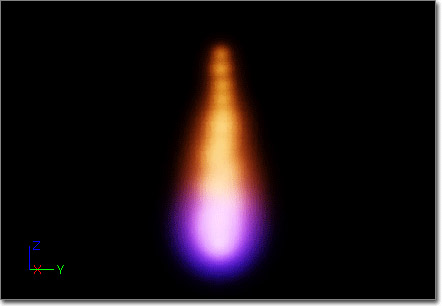

Color (색)
Alpha Over Life (수명에 걸친 알파) - 파티클에 적용할 알파 성분을 나타내는 플로트 분포입니다. 파티클의 업데이트 도중 그 RelativeTime(상대 시간)을 사용하여 값을 구합니다.
Clamp Alpha (알파 제한) - 참이면 알파 값은 [0.0 .. 1.0f] 범위로 제한됩니다.
Color Over Life (수명에 걸친 색) - 파티클에 적용할 색을 나타내는 벡터 분포입니다. 파티클의 업데이트 도중 그 상대 시간을 사용하여 값을 구합니다.
모듈은 Spawn에서 파티클 시간을 사용하여 분포로부터 적절한 값을 구하고, Particle Color 및 BaseColor 값을 그걸로 설정합니다.
주: 다시, 색은 이 모듈에 의해 설정 됩니다. 즉 이 전에 왔던 컬러 모듈은 그 값이 억눌리게 됩니다!
모듈은 Update에서 파티클 시간을 사용하여 분포로부터 적절한 값을 구하여 Particle.Color 에다 설정합니다.
Scale Color/Life
Scale Color/Life(수명\색 스케일)은 파티클의 수명에 걸쳐 그 색의 스케일을 조절하는 데 사용되는 모듈입니다. 다음과 같은 멤버가 포함됩니다:
Color (색)
Alpha Scale Over Life (수명에 걸친 알파 스케일) - 파티클에 적용할 알파 성분을 나타내는 플로트 분포입니다. 파티클의 업데이트 도중 RelativeTime(상대 시간)을 사용하여 값을 구합니다.
Color Scale Over Life (수명에 걸친 컬러 스케일) - 파티클게 적용할 색을 나타내는 플로트 분포입니다. 파티클의 업데이트 도중 상대 시간을 사용하여 값을 구합니다.
Emitter Time (이미터 시간) - 효과가 이미터 시간을 기반으로 할 지, 파티클 시간을 기반으로 할 지를 나타내는 불리언입니다.
Spawn과 Update에서 모듈은 선택된 시간을 사용하여 분포로부터 적절한 값을 구하고, 이 값을 사용하여 파티클 색 스케일을 조절합니다.
Event 모듈
Event(이벤트)는 자기들끼리, 서로간에, 월드 등과 상호작용하는 파티클을 기반으로 이벤트를 생성하고 나서 해당 이벤트를 주시하고 있다가 범-파티클 시스템 수준으로 반응을 유발하는 모듈입니다. 파티클이 월드와 충돌할 때마다 네임드 콜리전 이벤트를 생성한 다음, 콜리전이 발생하는 곳마다 파티클을 스폰하는 것이 좋은 예가 되겠습니다.Event Generator
Event Generator(이벤트 생성기)는 지정한 조건에 따라 이벤트(들)를 만드는 모듈입니다. 이 모듈에는 이미터가 만들어내게 하고 싶은 이벤트 목록 전부를 포함하는 Events 배열이 하나 들어 있습니다. Events 배열의 각 항목에는 다음과 같은 속성이 있습니다:
Events (이벤트)
Type (종류) - 이벤트의 종류입니다. 가능한 종류는:
Frequency (빈도) - 이벤트를 발동시킬 빈도입니다. 1 이하의 값은 매번을 뜻합니다. 충돌 하나 걸러 한번씩마다 이벤트를 발동시킨다든가 할 때 사용하면 됩니다.
Low Freq (저빈도) - 빈도 범위 내에 임의성을 부여합니다. -1을 넣으면 범위가 없는 빈도 값을 사용함을 뜻합니다.
Particle Frequency (파티클 빈도) - 파티클마다 이벤트를 몇 번이나 발동시킬지 입니다.
First Time Only (처음만) - 처음 파이어할 때만 이벤트를 발동시킬지 여부입니다.
Last Time Only (마지막만) - 마지막 파이어할 때만 이벤트를 발동시킬지 여부입니다.
Use Reflected Impact Vector (반영된 임팩트 벡터 사용) - 힛 노멀이 아닌 임팩트 벡터의 방향으로 콜리전 이벤트의 결과 방향을 맞출지 여부입니다.
Custom Name (커스텀 이름) - 이벤트의 이름으로, 요 이벤트 이름을 리슨하는 리스너와 그에 맞는 동작을 구성할 수 있습니다. 모든 이벤트에는 이름을 지어야 합니다.
Particle Module Events To Send To Game (게임으로 보낼 파티클 모듈 이벤트) - 요 이벤트가 생성되었을 때 파이어시킬 이벤트입니다. 파티클 이벤트가 발동시킬 수 있어야 하는 게임 이벤트 종류를 나타내는 ParticleModuleEventSendToGame 의 서브클래스를 게임에다 새로 구현해야 합니다.
| 종류 | 설명 |
|---|---|
| EPT_Any (파종_아무) | 그냥 건들면 무조건 네임드 이벤트를 생성합니다. |
| EPT_Spawn (파종_스폰) | 요 이미터에 파티클이 스폰될 때마다 네임드 이벤트를 생성합니다. |
| EPT_Death (파종_죽음) | 요 이미터의 파티클이 죽을 때마다 네임드 이벤트를 생성합니다. |
| EPT_Collision (파종_충돌) | 요 이미터의 파티클이 다른 것과 충돌할 때마다 네임드 이벤트를 생성합니다. |
| EPT_Kismet (파종_키즈멧) | 키즈멧과 대화하는 이벤트를 생성합니다. 키즈멧 스크립트를 실행하거나 키즈멧 스크립트를 통해 파티클 명령을 실행할 수 있습니다. |
Event Receiver Kill All
네임드 이벤트를 리슨하다가 (신호 뜨면) 이미터의 파티클 전부를 죽입니다.
ParticleModuleEventReceiverKillParticles (파티클 모듈 이벤트 수신기 파티클 죽임)
Stop Spawning (스폰 중지) - 참이면 기존 파티클을 모두 죽이는 것에 더해 이미터가 파티클을 새로 스폰하는 것을 중지합니다.
Events (이벤트)
Event Generator Type (이벤트 생성기 종류) - 리슨할 이벤트의 종류입니다.
Event Name (이벤트 이름) - 리슨할 이벤트 이름입니다.
| 종류 | 설명 |
|---|---|
| EPT_Any | Event Name 속성에 지정된 이름의 이벤트 종류를 리슨합니다. |
| EPT_Spawn | 스폰 이벤트를 리슨합니다. |
| EPT_Death | 데쓰 이벤트를 리슨합니다. |
| EPT_Collision | 콜리전 이벤트를 리슨합니다. |
| EPT_Kismet | 키즈멧에서 Particle Event Generator(파티클 이벤트 생성기) 액션을 사용하여 생성된 이벤트를 리슨합니다. |
Event Receiver Spawn
네임드 이벤트를 리슨한 다음 이벤트가 파이어하는 것에 따라 파티클을 스폰합니다.
Location (위치)
Use PSys Location (파시 위치 사용) - 스폰 이벤트의 발생을 이벤트를 발동시킨 파티클의 이벤트에서 할 지, 아니면 파티클 시스템의 원점에서 할 지를 정하는 불리언입니다.
Source (소스)
Event Generator Type (이벤트 생성기 종류) - 리슨할 이벤트 종류입니다.
Event Name (이벤트 이름) - 리슨할 이벤트의 이름입니다.
| 종류 | 설명 |
|---|---|
| EPT_Any | Event Name 속성에 지정된 이름의 이벤트 종류를 리슨합니다. |
| EPT_Spawn | 스폰 이벤트를 리슨합니다. |
| EPT_Death | 데쓰 이벤트를 리슨합니다. |
| EPT_Collision | 콜리전 이벤트를 리슨합니다. |
| EPT_Kismet | 키즈멧에서 Particle Event Generator(파티클 이벤트 생성기) 액션을 사용하여 생성된 이벤트를 리슨합니다. |
Spawn (스폰)
Spawn Count (스폰 수) - 이벤트를 파이어할 때 얼마나 많은 파티클을 스폰지킬지를 정합니다.
Use Particle Time (파티클 시간 사용) - 데쓰-기반 이벤트 수신에 대해 이 옵션이 참인 경우, SpawnCount(스폰 수)를 찾아보는 데 ParticleTime(파티클 시간)을 사용해야 함을 뜻합니다. 거짓이면 (그리고 수신된 기타 이벤트 전부에서) 이벤트의 이미터 시간을 사용합니다.
Velocity (속도)
Inherit Velocity (속도 상속) - 참이면 이벤트를 발동시키는 파티클의 속도는 스폰되는 파티클의 시작 속도로 사용되게 됩니다.
Inherit Velocity Scale (속도 스케일 상속) - Inherit Velocity (속도 상속)이 참일 경우 속도 스케일 조절용 곱수입니다.
Kill 모듈
Kill(킬)은 지정된 구현에 의해 정의된 규칙에 맞아 떨어지는 경우 지정된 파티클을 죽이는 모듈입니다.Kill Box
Kill box(킬 박스)는 정의된 박스 밖으로 움직일 때 파티클을 죽이는 데 사용되는 모듈입니다. 다음과 같은 멤버가 포함됩니다:
Kill (킬)
Lower Left Corner (좌하단 코너) - 박스의 좌하단 구석을 정의하는 벡터 분포입니다.
Upper Right Corner (우상단 코너) - 박스의 우상단 구석을 정의하는 벡터 분포입니다.
Absolute (절대) - 참이면 코너 세팅은 월드-공간 값으로 간주되며, 테스트시 바뀌지 않고 남아있습니다. 거짓이면 박스는 이미터의 월드-공간으로 변형됩니다.
Kill Inside (내부 킬) - 참이면 박스 안쪽에 떨어지는 파티클이 죽습니다. 거짓(디폴트)이면 박스 바깥에 떨어지는 게 죽습니다.
3D 미리보기 모드를 켜면 캐스케이드 미리보기 창에 와이어 박스가 그려집니다.
Kill Height
Kill height(킬 높이)는 지정된 높이 이상으로 움직이는 파티클을 죽이는 데 사용되는 모듈입니다. 다음과 같은 멤버가 포함됩니다:
Kill (킬)
Height (높이) - 어느 높이 이상으로 올라온 파티클을 죽일지를 정의하는 플로트 분포입니다.
Absolute (절대) - 참이면 월드-공간 값으로 간주하여 테스트시 미변경 상태로 남아있게 됩니다. 거짓이면 높이가 이미터의 월드-공간으로 변형됩니다.
Floor (바닥) - 참이면 높이 값 아래 파티클이 죽습니다. 거짓(디폴트)이면 높이 값 위로 올라가는 게 죽습니다.
3D 미리보기 모드를 켜면, 킬 높이 값 위치에 면이 그려집니다.
Lifetime 모듈
Lifetime
(커서를 올리면 움직입니다.)
Lifetime (수명)
Lifetime (수명) - 파티클의 수명을 (초 단위로) 나타내는 플로트 분포입니다. 파티클의 스폰시 EmitterTime(이미터 시간)에 따라 값을 구합니다.
Spawn에서 모듈은 현재 이미터 시간을 사용한 분포로부터 적절한 값을 구합니다. 그리고 나서 이 값을 Particle.OneOverMaxLifetime 필드에 더하며, 복수의 모듈에 적용 가능해 집니다.
Lifetime (Seeded)
Lifetime (Seeded) (수명 (시드))는 스폰시 파티클의 수명을 설정한다는 점에서 Lifetime(수명) 모듈과 동일하지만, 이미터가 사용될 때마다 모듈로부터 좀 더 일관된 효과를 내기 위해, 분포값을 선택할 때 사용될 시드 정보를 지정할 수 있는 모듈입니다. 다음과 같은 멤버가 포함됩니다:
Lifetime (수명)
Lifetime (수명) - 파티클의 수명을 (초 단위로) 나타내는 플로트 분포입니다. 파티클의 스폰시 EmitterTime(이미터 시간)에 따라 값을 구합니다.
RandomSeed (랜덤 시드)
Random Seed Info (랜덤 시드 정보) - 이 모듈의 속성에 대해 "임의" 값을 선택할 때 사용할 랜덤 시드입니다.
Spawn에서 모듈은 현재 이미터 시간을 사용한 분포로부터 적절한 값을 구합니다. 그 값을 Particle.OneOverMaxLifetime 필드에 더해서 여러 수명 모듈에 적용될 수 있게 합니다.
| 속성 | 설명 |
|---|---|
| Get Seed From Instance (인스턴스에서 시드 구하기) | 참이면 모듈은 오너 인스턴스에서 시드를 구해 봅니다. 실패시 예비로 Random Seeds (랜덤 시드) 배열에서 구하도록 합니다. |
| Instance Seed Is Index (인스턴스 시드는 인덱스) | 참이면 인스턴스에서 구한 시드값이 Random Seeds (랜덤 시드) 배열 속으로의 인덱스가 됩니다. |
| Parameter Name (파라미터 이름) | 이 시드 설정용으로 놓은 인스턴스에 노출시킬 이름입니다. |
| Random Seeds (랜덤 시드) | 이 모듈용으로 활용할 랜덤 시드값입니다. 값이 여럿 지정되면 인스턴스에서 임의의 값이 선택됩니다. |
| Reset Seed On Emitter Looping (이미터 반복시 시드 리셋) | 참이면 이미터가 반복될 때마다 시드를 리셋시킵니다. |
Location 모듈
Initial Location
(커서를 올리면 움직입니다.)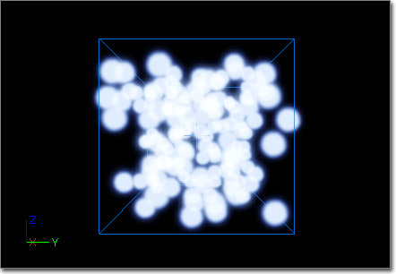
Location (위치)
Start Location (시작 위치) - 파티클이 방출될 위치를 이미터에 대해 상대적으로 나타내는 벡터 분포입니다. 파티클의 스폰시 이미터 시간에 따라 값을 구합니다.
Spawn에서 모듈은 현재 이미터 시간을 사용한 분포로부터 적절한 값을 구합니다. 파티클 이미터가 Use Local Space (로컬 공간 사용) 플랙이 없는 경우, 이 값은 월드 공간으로 변형됩니다. 그리고서 Particle.Location 필드에다 이 값을 더합니다.
Initial Loc (Seeded)
Initial Loc (Seeded) (초기 위치 (시드))는 파티클 스폰시 초기 위치를 설정한다는 점에서 Initial Location(초기 위치) 모듈과 같습니다만, 이미터가 사용될 때마다 모듈로부터 좀 더 일관된 효과를 내기 위해, 분포값을 선택할 때 사용될 시드 정보를 지정할 수 있는 모듈입니다. 다음과 같은 멤버를 포함합니다:
Location (위치)
Start Location (시작 위치) - 파티클이 방출될 이미터에 상대적인 위치를 나타내는 벡터 분포입니다. 파티클 스폰시 이미터 시간에 따라 값을 구합니다.
RandomSeed (랜덤 시드)
Random Seed Info (랜덤 시드 정보) - 이 모듈의 속성에 대해 "임의" 값을 선택할 때 사용할 랜덤 시드입니다.
Spawn에서 모듈은 현재 이미터 시간을 사용한 분포로부터 적절한 값을 구합니다. 파티클 이미터에 Use Local Space (로컬 공간 사용) 플랙이 설정되어 있지 않으면, 이 값은 월드-공간으로 변형됩니다. 그리고서 Particle.Location 필드에다 이 값이 더해집니다.
| 속성 | 설명 |
|---|---|
| Get Seed From Instance (인스턴스에서 시드 구하기) | 참이면 모듈은 오너 인스턴스에서 시드를 구해 봅니다. 실패시 예비로 Random Seeds (랜덤 시드) 배열에서 구하도록 합니다. |
| Instance Seed Is Index (인스턴스 시드는 인덱스) | 참이면 인스턴스에서 구한 시드값이 Random Seeds (랜덤 시드) 배열 속으로의 인덱스가 됩니다. |
| Parameter Name (파라미터 이름) | 이 시드 설정용으로 놓은 인스턴스에 노출시킬 이름입니다. |
| Random Seeds (랜덤 시드) | 이 모듈용으로 활용할 랜덤 시드값입니다. 값이 여럿 지정되면 인스턴스에서 임의의 값이 선택됩니다. |
| Reset Seed On Emitter Looping (이미터 반복시 시드 리셋) | 참이면 이미터가 반복될 때마다 시드를 리셋시킵니다. |
World Offset
World Offset (월드 오프셋) 모듈은 파티클 초기 위치를 이격시키는 데 사용됩니다. 오프셋은 월드 스페이스에 있으나 파티클 수명 동안 Use Local Space 플랙을 따릅니다. 즉 파티클은 이미터의 방향과 무관하게 항상 월드 스페이스에서 이격시켜 스폰하지만, 그 수명 동안 그만큼 이미터에 상대적인 오프셋을 유지한다는 뜻입니다. 다음과 같은 멤버가 포함됩니다:
Location (위치)
Start Location (시작 위치) - 파티클이 사용해야 할 월드-스페이스 오프셋을 나타내는 벡터 분포입니다. 파티클 스폰시의 EmitterTime 에 따라 값을 구합니다.
Bone/Socket Location
Bone/Socket Location(본/소켓 위치)는 스켈레탈 메시의 본이나 소켓 위치에다 직접 파티클을 스폰시킬 수 있는 모듈입니다. 다음과 같은 속성이 포함됩니다:
BoneSocket (본소켓)
Editor Skel Mesh (스켈 메시 편집) - 미리보기용으로 에디터에서 사용할 스켈레탈 메시를 지정합니다.
Orient Mesh Emitters (메시 이미터 방향맞춤) - 참이면 메시 이미터가 방출한 메시 파티클은 본이나 소켓 소스쪽으로 맞춰지게 됩니다.
Selection Method (선택 방법) - Source Locations (소스 위치) 배열에서 본이나 소켓을 선택하는 방법입니다.
Skel Mesh Actor Param Name (스켈 메시 액터 파람 이름) - 게임내에서 사용할 스켈레탈 메시 컴포넌트를 조달해 주는 스켈레탈 메시 액터를 지정하는 인스턴스 파라미터 이름입니다.
Source Locations (소스 위치) - 파티클을 스폰시킬 스켈레탈 메시상의 본이나 소켓 소스 배열입니다.
Source Type (소스 종류) - 소스 위치가 본인지 소켓인지를 지정합니다.
Universal Offset (범 오프셋) - 각 본이나 소켓 소스마다 적용할 오프셋 값입니다.
Update Position Each Frame (매 프레임마다 위치 업데이트) - 참이면 파티클의 위치가 매 프레임마다 본이나 소켓의 위치로 업데이트됩니다.
| 방법 | 설명 |
|---|---|
| BONESOCKETSEL_Sequential (본소켓선택_순차) | Source Locations (소스 위치) 배열의 아이템을 순서대로 뽑습니다. |
| BONESOCKETSEL_Random (본소켓선택_랜덤) | Source Locations (소스 위치) 배열의 아이템을 아무렇게나 뽑습니다. |
| BONESOCKETSEL_RandomExhaustive (본소켓선택_랜덤소진) | Source Locations (소스 위치) 배열의 아이템을 임의로 뽑긴 합니다만, 전부 다 한 번씩 뽑히기 전까지는 같은 아이템을 두 번 뽑지 않습니다. |
| 속성 | 설명 |
|---|---|
| Bone Socket Name (본 소켓 이름) | 파티클에 대한 소스로 사용할 스켈레탈 메시상의 본이나 소켓 이름을 지정합니다. |
| Offset (오프셋) | 요 개별 본이나 소켓에다 Universal Offset (범 오프셋)에 추가로 사용할 오프셋 값입니다. |
| 종류 | 설명 |
|---|---|
| BONESOCKETSOURCE_Sockets (본소켓소스_소켓) | 파티클 스폰용 Source Locations (소스 위치)는 소켓 이름입니다. |
| BONESOCKETSOURCE_Bones (본소켓소스_본) | 파티클 스폰용 Source Locations (소스 위치)는 본입니다. |
Direct Location
Direct Location(직접 위치)는 파티클의 위치를 직접 설정하는 모듈입니다. 다음과 같은 멤버가 포함됩니다:
Location (위치)
Direction (방향) - 현재 미사용.
Location (위치) - 지정된 시간에 파티클의 위치를 나타내는 벡터 분포입니다. 파티클의 RelativeTime(상대 시간)에 따라 값을 구합니다. 주의할 점은 파티클 위치가 여기로 설정되기에, 기존의 어떤 모듈 영향도 덮어쓰게 된다는 겁니다.
Location Offset (위치 오프셋) - Location(위치) 계산으로 구한 위치를 적용할 오프셋을 나타내는 벡터 분포입니다. EmitterTime(이미터 시간)을 사용하여 오프셋을 구합니다. 액터같은 것에다가 스크립트 코드로 Location(위치) 필드를 설정할 때나, 오브젝트 주변으로 오프셋시키기 위해 임의의 LocationOffset (위치 오프셋)을 설정할 때도 좋습니다. 오프셋 값은 파티클의 수명에 걸쳐 변하지 않습니다.
Scale Factor (스케일 인수) - 시간선의 특정 시점에서 오브젝트의 속도 스케일을 가능케 하는 벡터 분포입니다. 파티클이 따르는 경로에 맞추기 위해 워프시킬 수 있습니다.
Emitter Init Loc
Emitter InitLoc (이미터 초기위치)는 파티클의 초기 위치를 (동일 파티클 시스템 내) 다른 이미터의 파티클 위치로 설정하는 데 사용되는 모듈입니다. 다음과 같은 멤버가 포함됩니다:
Location (위치)
Emitter Name (이미터 이름) - 위치 파티클용 소스로 사용할 이미터의 이름입니다.
Inherit Source Rotation (소스 회전 상속) - 소스 파티클의 회전이 스폰된 파티클에 상속될지 여부입니다.
Inherit Source Rotation Scale (소스 회전 스케일 상속) - 소스 회전이 상속될 때 적용할 스케일 값입니다.
Inherit Source Velocity (소스 속도 상속) - 소스 파티클의 속도가 스폰된 파티클에 상속될지 여부입니다.
Inherit Source Velocity Scale (소스 속도 스케일 상속) - 소스 속도가 상속될 때 적용할 스케일 값입니다.
Selection Method (선택 방법) - 소스 이미터로부터 파티클을 선택하는 방법을 나타내는 열거형입니다. 다음 중 하나가 가능합니다:
| 방법 | 설명 |
|---|---|
| ELESM_Random (로이선법_랜덤) | 소스 이미터로부터 파티클을 임의로 선택합니다. |
| ELESM_Sequential (로이선법_순차) | 소스 이미터로부터 파티클을 순서대로 선택합니다. |
Emitter Direct Loc
Emitter DirectLoc(이미터 직접위치)는 파티클의 전체 시간 동안 파티클의 위치를 (같은 파티클 시스템 내) 다른 이미터의 파티클 위치로 설정하는 데 사용되는 모듈입니다. 다음과 같은 멤버가 포함됩니다:
Location (위치)
EmitterName (이미터 이름) - 위치 파티클의 소스로 사용할 이미터의 이름입니다.
사용되는 파티클은 위치가 설정된 파티클과 똑같은 인덱스에 있는 녀석이 됩니다.
Cylinder
(커서를 올리면 움직입니다.)

Location (위치)
Height Axis (높이 축) - 파티클 시스템의 어느 축이 원통의 높이 축을 나타낼 지를 가리키는 열거형입니다. 다음 중 하나가 가능합니다:
Positive_X, Positive_Y, Positive_Z, Negative_X, Negative_Y, Negative_Z ([양성/음성]_[X/Y/Z]) - 파티클 스폰용으로 사용가능한 축을 지정합니다.
Radial Velocity (반경 속도) - 파티클 속도가 원통의 '원형' 면에만 적용시킬지 여부입니다.
Start Height (시작 높이) - 위치를 중심으로 잡고 원통의 높이를 내는 플로트 분포입니다.
Start Location (시작 위치) - 경계 프리미티브의 위치를 이미터의 위치에 상대적으로 나타내는 벡터 분포입니다.
Start Radius (시작 반경) - 원통 반경을 내는 플로트 분포입니다.
Surface Only (표면만) - 파티클을 프리미티브의 표면에만 스폰시킬지 여부입니다.
Velocity (속도) - 파티클이 프리미티브 내 위치에서 속도값을 가져야할지 여부입니다.
Velocity Scale (속도 스케일) - 속도에 적용할 스케일 값을 나타내는 플로트 분포입니다. Velocity(속도)가 체크(참)됐을 때만 사용됩니다.
| 축 | 설명 |
|---|---|
| PMLPC_HEIGHTAXIS_X | 파티클 시스템의 X축을 따라 원통의 높이축을 맞춥니다. |
| PMLPC_HEIGHTAXIS_Y | 파티클 시스템의 Y축을 따라 원통의 높이축을 맞춥니다. |
| PMLPC_HEIGHTAXIS_Z | 파티클 시스템의 Z축을 따라 원통의 높이축을 맞춥니다. |
Cylinder (Seeded)
Cylinder (Seeded) (실린더 (시드))는 원통형 내에 파티클의 초기 위치를 설정한다는 점에서 Cylinder(실린더) 모듈과 같습니다만, 이미터가 사용될 때마다 모듈로부터의 효과를 좀 더 일관되게 하기 위해, 분포값을 선택할 때 사용되는 시드 정보를 지정할 수 있는 모듈입니다. 다음과 같은 멤버가 포함됩니다:
Location (위치)
Height Axis (높이 축) - 어느 파티클 축이 원통의 높이축을 나타낼지를 가리키는 열거형입니다. 다음 중 하나가 가능합니다:
Positive_X, Positive_Y, Positive_Z, Negative_X, Negative_Y, Negative_Z ([양성/음성]_[X/Y/Z]) - 파티클 스폰용으로 사용가능한 축을 지정합니다.
Radial Velocity (반경 속도) - 파티클 속도가 원통의 '원형' 면에만 적용시킬지 여부입니다.
Start Height (시작 높이) - 위치를 중심으로 잡고 원통의 높이를 내는 플로트 분포입니다.
Start Location (시작 위치) - 경계 프리미티브의 위치를 이미터의 위치에 상대적으로 나타내는 벡터 분포입니다.
Start Radius (시작 반경) - 원통 반경을 내는 플로트 분포입니다.
Surface Only (표면만) - 파티클을 프리미티브의 표면에만 스폰시킬지 여부입니다.
Velocity (속도) - 파티클이 프리미티브 내 위치에서 속도값을 가져야할지 여부입니다.
Velocity Scale (속도 스케일) - 속도에 적용할 스케일 값을 나타내는 플로트 분포입니다. Velocity(속도)가 체크(참)됐을 때만 사용됩니다.
| 축 | 설명 |
|---|---|
| PMLPC_HEIGHTAXIS_X | 파티클 시스템의 X축을 따라 원통의 높이축을 맞춥니다. |
| PMLPC_HEIGHTAXIS_Y | 파티클 시스템의 Y축을 따라 원통의 높이축을 맞춥니다. |
| PMLPC_HEIGHTAXIS_Z | 파티클 시스템의 Z축을 따라 원통의 높이축을 맞춥니다. |
RandomSeed (랜덤 시드)
Random Seed Info (랜덤 시드 정보) - 이 모듈의 속성용 "임의" 값을 선택할 때 사용하는 랜덤 시드입니다.
| 속성 | 설명 |
|---|---|
| Get Seed From Instance (인스턴스에서 시드 구하기) | 참이면 모듈은 오너 인스턴스에서 시드를 구해 봅니다. 실패시 예비로 Random Seeds (랜덤 시드) 배열에서 구하도록 합니다. |
| Instance Seed Is Index (인스턴스 시드는 인덱스) | 참이면 인스턴스에서 구한 시드값이 Random Seeds (랜덤 시드) 배열 속으로의 인덱스가 됩니다. |
| Parameter Name (파라미터 이름) | 이 시드 설정용으로 놓은 인스턴스에 노출시킬 이름입니다. |
| Random Seeds (랜덤 시드) | 이 모듈용으로 활용할 랜덤 시드값입니다. 값이 여럿 지정되면 인스턴스에서 임의의 값이 선택됩니다. |
| Reset Seed On Emitter Looping (이미터 반복시 시드 리셋) | 참이면 이미터가 반복될 때마다 시드를 리셋시킵니다. |
Sphere
(커서를 올리면 움직입니다.)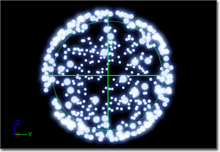
Location (위치)
Positive_X, Positive_Y, Positive_Z, Negative_X, Negative_Y, Negative_Z ([양성/음성]_[X/Y/Z]) - 파티클 스폰용으로 사용가능한 축을 지정합니다.
Start Location (시작 위치) - 경계 프리미티브의 위치를 이미터의 위치에 상대적으로 나타내는 벡터 분포입니다.
Start Radius (시작 반경) - 구체 반경을 내는 플로트 분포입니다.
Surface Only (표면만) - 파티클을 프리미티브의 표면에만 스폰시킬지 여부입니다.
Velocity (속도) - 파티클이 프리미티브 내 위치에서 속도값을 가져야할지 여부입니다.
Velocity Scale (속도 스케일) - 속도에 적용할 스케일 값을 나타내는 플로트 분포입니다. Velocity(속도)가 체크(참)됐을 때만 사용됩니다.
Sphere (Seeded)
Sphere (Seeded) (구체 (시드))는 구체형 내에 파티클의 초기 위치를 설정한다는 점에서 Sphere(구체) 모듈과 같습니다만, 이미터가 사용될 때마다 모듈로부터의 효과를 좀 더 일관되게 하기 위해, 분포값을 선택할 때 사용되는 시드 정보를 지정할 수 있는 모듈입니다. 다음과 같은 멤버가 포함됩니다:
Location (위치)
Positive_X, Positive_Y, Positive_Z, Negative_X, Negative_Y, Negative_Z ([양성/음성]_[X/Y/Z]) - 파티클 스폰용으로 사용가능한 축을 지정합니다.
Start Location (시작 위치) - 경계 프리미티브의 위치를 이미터의 위치에 상대적으로 나타내는 벡터 분포입니다.
Start Radius (시작 반경) - 구체 반경을 내는 플로트 분포입니다.
Surface Only (표면만) - 파티클을 프리미티브의 표면에만 스폰시킬지 여부입니다.
Velocity (속도) - 파티클이 프리미티브 내 위치에서 속도값을 가져야할지 여부입니다.
Velocity Scale (속도 스케일) - 속도에 적용할 스케일 값을 나타내는 플로트 분포입니다. Velocity(속도)가 체크(참)됐을 때만 사용됩니다.
RandomSeed (랜덤 시드)
Random Seed Info (랜덤 시드 정보) - 이 모듈의 속성용 "임의" 값을 선택할 때 사용하는 랜덤 시드입니다.
| 속성 | 설명 |
|---|---|
| Get Seed From Instance (인스턴스에서 시드 구하기) | 참이면 모듈은 오너 인스턴스에서 시드를 구해 봅니다. 실패시 예비로 Random Seeds (랜덤 시드) 배열에서 구하도록 합니다. |
| Instance Seed Is Index (인스턴스 시드는 인덱스) | 참이면 인스턴스에서 구한 시드값이 Random Seeds (랜덤 시드) 배열 속으로의 인덱스가 됩니다. |
| Parameter Name (파라미터 이름) | 이 시드 설정용으로 놓은 인스턴스에 노출시킬 이름입니다. |
| Random Seeds (랜덤 시드) | 이 모듈용으로 활용할 랜덤 시드값입니다. 값이 여럿 지정되면 인스턴스에서 임의의 값이 선택됩니다. |
| Reset Seed On Emitter Looping (이미터 반복시 시드 리셋) | 참이면 이미터가 반복될 때마다 시드를 리셋시킵니다. |
Source Movement
Source Movement(소스 이동)은 소스(, 즉 이미터)의 이동에 따라 파티클의 위치를 오프셋시키는 데 사용되는 모듈입니다. 다음과 같은 속성을 포함합니다:
SourceMovement (소스 이동)
Source Movement (소스 이동) - 파티클의 위치에 더하기 전에 소스의 이동에다 적용할 스케일 인자를 지정하는 벡터 분포입니다. 파티클-상대적 시간을 사용하여 값을 구합니다.
Material 모듈
Material(머티리얼)은 파티클 이미터에 적용되는 머티리얼 상에서 작동하는 모듈입니다.Parameter Material
Parameter Material(파라미터 머티리얼)은 메시 이미터에 사용되는 스프라이트 이미터나 스태틱 메시의 섹션에 적용되는 머티리얼을 덮어쓸 수 있는 모듈입니다. 다음과 같은 멤버를 포함합니다:
ParticleModuleMaterialByParameter (파라미터에 의한 파티클 모듈 머티리얼)
Default Materials (디폴트 머티리얼) - Material Parameters (머티리얼 파라미터)에 일치하는 파라미터가 없을 때 사용해 볼 머티리얼 배열입니다.
Material Parameters (머티리얼 파라미터) - 현재 머티리얼을 덮어쓰는 데 사용할 머티리얼을 지정하는 데 사용되는 인스턴스 파라미터의 이름 배열입니다. 스프라이트 이미터에 대해서는 배열의 첫째 요소만 사용가능합니다. 배열의 요소들은 메시 이미터용 스태틱 메시의 머티리얼 슬롯에 매핑됩니다.
인스턴스 파라미터를 통해 제공되는 머티리얼이 없고 항목에 Default Materials (디폴트 머티리얼) 배열이 빈(None으로 설정된) 경우, 스프라이트 이미터에 대해서는 이미터의 머티리얼이, 또 메시 이미터에 대해서는 스태틱 메시 엘리먼트로부터의 머티리얼이 사용됩니다. 스태틱 메시의 특정 부분 머티리얼을 선택적으로 덮어쓸 수 있도록요.
Orbit 모듈
Orbit(선회)는 실제 파티클 중심으로부터 파티클을 오프셋/회전시켜 렌더링할 수 있는 모듈입니다.Orbit
(커서를 올리면 움직입니다.)
Chaining (체인)
Chain Mode (체인 모드) - 이 모듈이 이미터의 다른 모듈과 어떤 식으로 체인화할 지를 나타내는 열거형입니다. 그 전 모듈과의 결합 방식은 이 값의 설정을 통해 정의됩니다. 다음 중 하나가 가능합니다:
| 모드 | 설명 |
|---|---|
| EOChainMode_Add (오체인모드_더하기) | 모듈 값에다 기존 결과를 더합니다. |
| EOChainMode_Scale (오체인모드_스케일) | 모듈 값에다 기존 결과를 곱합니다. |
| EOChainMode_Link (오체인모드_연결) | 체인을 '끊고' 기존 결과로부터의 값을 적용합니다. |
Offset (오프셋)
Offset Amount (오프셋 양) - 파티클 '중심'으로부터 스프라이트의 오프셋을 내는 벡터 분포입니다.
Offset Options (오프셋 옵션) - Offset Amount (오프셋 양)에 관련된 옵션입니다.
| Process During Spawn (스폰 도중 처리) | 참이면 파티클의 스폰 도중에 관련 데이터 조각이 처리됩니다. |
| Process During Update (업데이트 도중 처리) | 참이면 파티클의 업데이트 도중에 관련 데이터 조각이 처리됩니다. |
| Use Emitter Time (이미터 시간 사용) | 참이면 관련 데이터 조각을 구할 때 EmitterTime(이미터 시간)이 사용됩니다. 거짓이면 파티클 RelativeTime(상대 시간)이 사용됩니다. |
Rotation (회전)
Rotation Amount (회전 양) - 파티클 위치를 중심으로 오프셋을 회전시킬 양을 내는 벡터 분포입니다. '바퀴' 단위, 즉 0=무회전, 0.5=180도 회전, 1.0=360도 회전을 뜻합니다.
Rotation Options (회전 옵션) - Rotation Amount (회전 양)에 관련된 옵션입니다.
| Process During Spawn (스폰 도중 처리) | 참이면 파티클의 스폰 도중 관련 데이터 조각이 처리됩니다. |
| Process During Update (업데이트 도중 처리) | 참이면 파티클의 업데이트 도중 관련 데이터 조각이 처리됩니다. |
| Use Emitter Time (이미터 시간 사용) | 참이면 관련 데이터 조각을 구할 때 EmitterTime(이미터 시간)이 사용됩니다. 거짓이면 파티클 RelativeTime(상대 시간)이 사용됩니다. |
RotationRate (회전율)
Rotation Rate Amount (회전율 양) - 파티클 위치 주변으로 오프셋을 회전시킬 비율을 내는 벡터 분포입니다. '바퀴' 단위입니다.
Rotation Rate Options (회전율 옵션) - Rotation Rate Amount (회전율 양)에 관련된 옵션입니다.
| Process During Spawn (스폰 도중 처리) | 참이면 파티클의 스폰 도중 관련 데이터 조각이 처리됩니다. |
| Process During Update (업데이트 도중 처리) | 참이면 파티클의 업데이트 도중 관련 데이터 조각이 처리됩니다. |
| Use Emitter Time (이미터 시간 사용) | 참이면 관련 데이터 조각을 구할 때 EmitterTime(이미터 시간)이 사용됩니다. 거짓이면 파티클 RelativeTime(상대 시간)이 사용됩니다. |
Orientation 모듈
Axis Lock
Axis Lock(축 잠금)은 파티클을 지정된 축을 향하도록 고정시키는 데 사용되는 모듈입니다. 현재 이 모듈은 스프라이트-기반 전용 모듈입니다. 다음과 같은 멤버가 포함됩니다:
Orientation (방위 맞춤)
Lock Axis Flags (축 잠금 플랙) - 파티클을 어느 축에다 잠글지를 나타냅니다. 다음 값 중 하나입니다:
| 플랙 | 설명 |
|---|---|
| EPAL_NONE (파축잠_없음) | 축에 잠그지 않습니다. |
| EPAL_X (파축잠_X) | 스프라이트를 +X 방향으로 잠급니다. |
| EPAL_Y (파축잠_Y) | 스프라이트를 +Y 방향으로 잠급니다. |
| EPAL_Z (파축잠_Z) | 스프라이트를 +Z 방향으로 잠급니다. |
| EPAL_NEGATIVE_X (파축잠_음성_X) | 스프라이트를 -X 방향으로 잠급니다. |
| EPAL_NEGATIVE_Y (파축잠_음성_Y) | 스프라이트를 -Y 방향으로 잠급니다. |
| EPAL_NEGATIVE_Z (파축잠_음성_Z) | 스프라이트를 -Z 방향으로 잠급니다. |
| EPAL_ROTATE_X (파축잠_회전_X) | 스프라이트 회전을 X축 상으로 잠급니다. |
| EPAL_ROTATE_Y (파축잠_회전_Y) | 스프라이트 회전을 Y축 상으로 잠급니다. |
| EPAL_ROTATE_Z (파축잠_회전_Z) | 스프라이트 회전을 Z축 상으로 잠급니다. |
Parameter 모듈
Dynamic Parameter
Dynamic Parameter(다이내믹 파라미터)는 이미터에 의해 사용되는 머티리얼에 스케일러 값을 넷 전달하여 이미터가 머티리얼 효과를 제어할 수 있게 하는 모듈입니다.
ParticleModuleParameterDynamic (파티클 모듈 파라미터 다이내믹)
Dynamic Params (다이내믹 파람) - 모듈용 동적 파라미터 배열입니다.
Dynamic Params 배열의 각 요소에는 다음과 같은 속성이 있습니다:
Param Name (파람 이름) - 머티리얼의 DynamicParameter(다이내믹 파라미터) 내에 연결된 파라미터 이름입니다. 읽기-전용 속성이며 자동으로 채워집니다.
Use Emitter Time (이미터 시간 사용) - 참이면 파라미터에 대한 분포값을 구하는 데 이미터 시간을 사용합니다. 아니면 파티클-상대 시간을 사용합니다.
Spawn Time Only (스폰 시간에만) - 참이면 파티클이 스폰될 때만 파라미터 값을 설정합니다. 아니면 매 프레임마다 값을 업데이트합니다.
Value Method (값 방법) - 파라미터 값을 구하는 데 사용할 방법을 지정합니다.
Scale Velocity By Param Value (속도를 파람 값으로 스케일) - 참이면 머티리얼에 전달된 속도 값은 Param Value 분포에 설정된 값으로 스케일됩니다.
Param Value (파람 값) - EDPV_UserSet (다파값_유저설정) 방법에서 사용할 파라미터 값 설정용 플로트 분포입니다.
| 방법 | 설명 |
|---|---|
| EDPV_UserSet (다파값_유저설정) | Param Value 속성에 설정된 값이 파라미터의 값으로써 머티리얼에 전달됩니다. |
| EDPV_VelocityX (다파값_속도X) | X축 상의 파라미터 속도가 파라미터의 값으로써 머티리얼에 전달됩니다. |
| EDPV_VelocityY (다파값_속도Y) | Y축 상의 파라미터 속도가 파라미터의 값으로써 머티리얼에 전달됩니다. |
| EDPV_VelocityZ (다파값_속도Z) | Z축 상의 파라미터 속도가 파라미터의 값으로써 머티리얼에 전달됩니다. |
| EDPV_VelocityMag (다파값_속도급) | 파티클 속도의 급(magnitude)이 파라미터의 값으로써 머티리얼에 전달됩니다. |
Dynamic Parameter (Seeded)
Dynamic Parameter (Seeded) (다이내믹 파라미터 (시드))는 이미터가 머티리얼에 값을 전달할 수 있게 한다는 점에서는 Dynamic Parameter(다이내믹 파라미터) 모듈과 같습니다만, 이미터가 사용될 때마다 모듈로부터의 효과를 좀 더 일관되게 하기 위해, 분포 값을 선택할 때 사용되는 시드 정보를 지정할 수 있는 모듈이라는 점이 다릅니다. 다음과 같은 멤버를 포함합니다:
ParticleModuleParameterDynamic (파티클 모듈 파라미터 다이내믹)
Dynamic Params (다이내믹 파람) - 모듈용 다이내믹 파라미터 배열입니다.
Dynamic Params (다이내믹 파람) 배열의 각 요소에는 다음과 같은 속성이 있습니다:
Param Name (파람 이름) - 머티리얼의 DynamicParameter(다이내믹 파라미터) 표현식에 있는 관련 파라미터 이름입니다. 이 속성은 읽기-전용이며 자동으로 채워집니다.
Use Emitter Time (이미터 시간 사용) - 참이면 파라미터용 분포 값을 구할 때 이미터 시간을 사용합니다. 아니면 파티클-상대 시간을 사용합니다.
Spawn Time Only (스폰 시간에만) - 참이면 파티클이 스폰될 때만 파라미터 값을 설정합니다. 아니면 매 프레임마다 값을 업데이트합니다.
Value Method (값 방법) - 파라미터 값을 구할 대 사용할 방법을 지정합니다.
Scale Velocity By Param Value (속도를 파람 값으로 스케일) - 참이면 머티리얼에 전달된 속도 값은 Param Value 분포에 설정된 값으로 스케일됩니다.
Param Value (파람 값) - EDPV_UserSet (다파값_유저설정) 방법에서 사용할 파라미터 값 설정용 플로트 분포입니다.
| Method | Description |
|---|---|
| EDPV_UserSet (다파값_유저설정) | Param Value 속성에 설정된 값이 파라미터의 값으로써 머티리얼에 전달됩니다. |
| EDPV_VelocityX (다파값_속도X) | X축 상의 파라미터 속도가 파라미터의 값으로써 머티리얼에 전달됩니다. |
| EDPV_VelocityY (다파값_속도Y) | Y축 상의 파라미터 속도가 파라미터의 값으로써 머티리얼에 전달됩니다. |
| EDPV_VelocityZ (다파값_속도Z) | Z축 상의 파라미터 속도가 파라미터의 값으로써 머티리얼에 전달됩니다. |
| EDPV_VelocityMag (다파값_속도급) | 파티클 속도의 급(magnitude)이 파라미터의 값으로써 머티리얼에 전달됩니다. |
RandomSeed (랜덤 시드)
Random Seed Info (랜덤 시드 정보) - 이 모듈의 속성용 "임의" 값을 선택할 때 사용할 랜덤 시드입니다.
| 속성 | 설명 |
|---|---|
| Get Seed From Instance (인스턴스에서 시드 구하기) | 참이면 모듈은 오너 인스턴스에서 시드를 구해 봅니다. 실패시 예비로 Random Seeds (랜덤 시드) 배열에서 구하도록 합니다. |
| Instance Seed Is Index (인스턴스 시드는 인덱스) | 참이면 인스턴스에서 구한 시드값이 Random Seeds (랜덤 시드) 배열 속으로의 인덱스가 됩니다. |
| Parameter Name (파라미터 이름) | 이 시드 설정용으로 놓은 인스턴스에 노출시킬 이름입니다. |
| Random Seeds (랜덤 시드) | 이 모듈용으로 활용할 랜덤 시드값입니다. 값이 여럿 지정되면 인스턴스에서 임의의 값이 선택됩니다. |
| Reset Seed On Emitter Looping (이미터 반복시 시드 리셋) | 참이면 이미터가 반복될 때마다 시드를 리셋시킵니다. |
Rotation 모듈
Initial Rotation
(커서를 올리면 움직입니다.)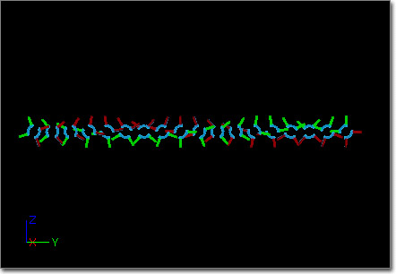

Rotation (회전)
Start Rotation (시작 회전) - 파티클의 방출이 시작될 회전을 가리키는 플로트 분포입니다. (1.0 = 360도) 파티클 스폰시 EmitterTime(이미터 시간)에 따라 값을 구합니다.
Init Rotation (Seeded)
Init Rotation (Seeded) (초기 회전 (시드))는 초기 회전이나 파티클을 설정한다는 점에서 Initial Rotation(초기 회전) 모듈과 동일합니다만, 이미터가 사용될 때마다 모듈로부터의 효과를 좀 더 일관되게 하기 위해, 분포 값을 선택할 때 사용될 시드 정보를 지정할 수 있는 모듈입니다. 다음과 같은 멤버가 포함됩니다:
Rotation (회전)
Start Rotation (시작 회전) - 파티클이 방출을 시작할 회전을 나타내는 플로트 분포입니다. (1.0 = 360도) 파티클 스폰시 EmitterTime(이미터 시간)에 따라 값을 구합니다.
Rotation/Life
(커서를 올리면 움직입니다.)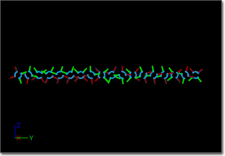
Rotation (회전)
Rotation Over Life (수명에 걸친 회전) - 파티클이 회전할 양을 가리키는 플로트 분포입니다. (1.0 = 360도) 파티클의 업데이트시 RelativeTime(상대 시간)에 따라 값을 구합니다.
Scale (스케일) - 기존 파티클 회전에다 RotationOverLife (수명에 걸친 회전)에서 구한 값으로 스케일 조절할지 여부입니다. 거짓이면 파티클 회전에다 구한 값을 더합니다.
Rotation Rate 모듈
Mesh Rot Rate Over Life
Mesh Rot Rate Over Life(수명에 걸친 메시 회전율)은 메시-기반 파티클의 그 수명에 따른 회전율을 설정하는 데 사용되는 모듈입니다. 다음과 같은 멤버가 포함됩니다:
Rotation (회전)
Rot Rate (회전율) - 파티클이 가져야 하는 회전율을 초당 회전으로 나타내는 벡터 분포입니다. 파티클-상대 시간을 사용하여 값을 구합니다.
Scale Rot Rate (회전율 스케일) - 참이면 파티클의 현재 회전율을 Rot Rate (회전율) 분포값으로 스케일 조절합니다.
Initial Rot Rate
(커서를 올리면 움직입니다.)

Rotation (회전)
Start Rotation Rate (시작 회전율) - 파티클이 가져야 하는 회전율을 초당 회전 단위로 나타내는 플로트 분포입니다. 파티클의 스폰시 EmitterTime(이미터 시간)에 따라 값을 구하며, Particle RotationRate 및 Base RotationRate 값에 더해집니다.
Init Rot Rate (Seeded)
Initial RotRate (Seeded) (초기 회전율 (시드))는 파티클이 방출될 때 회전율을 설정한다는 점에서 Initial Rot Rate (초기 회전율) 모듈과 같습니다만, 이미터가 사용될 때마다 모듈로부터의 효과를 좀 더 일관되게 내기 위해, 분포 값을 선택할 때 사용되는 시드 정보를 지정할 수 있는 모듈이라는 점이 다릅니다. 다음과 같은 멤버가 포함됩니다:
RandomSeed (랜덤 시드)
Random Seed Info (랜덤 시드 정보) - 이 모듈의 속성용 "임의" 값을 선택하는 데 사용할 랜덤 시드입니다.
| 속성 | 설명 |
|---|---|
| Get Seed From Instance (인스턴스에서 시드 구하기) | 참이면 모듈은 오너 인스턴스에서 시드를 구해 봅니다. 실패시 예비로 Random Seeds (랜덤 시드) 배열에서 구하도록 합니다. |
| Instance Seed Is Index (인스턴스 시드는 인덱스) | 참이면 인스턴스에서 구한 시드값이 Random Seeds (랜덤 시드) 배열 속으로의 인덱스가 됩니다. |
| Parameter Name (파라미터 이름) | 이 시드 설정용으로 놓은 인스턴스에 노출시킬 이름입니다. |
| Random Seeds (랜덤 시드) | 이 모듈용으로 활용할 랜덤 시드값입니다. 값이 여럿 지정되면 인스턴스에서 임의의 값이 선택됩니다. |
| Reset Seed On Emitter Looping (이미터 반복시 시드 리셋) | 참이면 이미터가 반복될 때마다 시드를 리셋시킵니다. |
Rotation (회전)
Start Rotation Rate (시작 회전율) - 파티클이 가져야 할 회전율을 초당 회전 단위로 나타내는 플로트 분포입니다. 파티클의 스폰시 EmitterTime(이미터 시간)에 따라 값을 구한 다음, Particle RotationRate 및 Base RotationRate 값에다 더합니다.
Rot Rate/Life
(커서를 올리면 움직입니다.)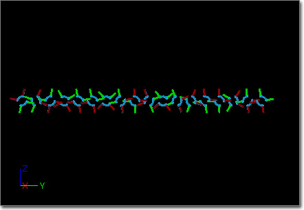
Rotation (회전)
Life Multiplier (수명 곱수) - 파티클의 회전율에 적용되어야 할 스케일 인수를 나타내는 플로트 분포입니다. 파티클의 스폰 및 업데이트시 RelativeTime(상대 시간)에 따라 값을 구한 다음, Particle.RotationRate 에다 곱해줍니다.
Size 모듈
Initial Size
(커서를 올리면 움직입니다.)

Size (크기)
Start Size (시작 크기) - 파티클용으로 사용할 초기 크기를 나타내는 벡터 분포입니다. 파티클의 스폰시 EmitterTime(이미터 시간)에 따라 값을 구한 다음, 스폰되는 파티클의 Size(크기)와 BaseSize(기본 크기)에다 더합니다.
Initial Size (Seeded)
Initial Size (Seeded) (초기 크기 (시드))는 파티클이 방출될 대 그 크기를 설정한다는 점에서는 Initial Size(초기 크기) 모듈과 동일하지만, 이미터가 사용될 때마다 모듈로부터의 효과를 좀 더 일관되게 하기 위해, 분포 값을 선택할 때 사용되는 시드 정보를 지정할 수 있는 모듈이라는 점이 다릅니다. 다음과 같은 멤버가 포함됩니다:
RandomSeed (랜덤 시드)
Random Seed Info (랜덤 시드 정보) - 이 모듈의 속성용 "임의" 값을 선택할 때 사용할 랜덤 시드입니다.
| 속성 | 설명 |
|---|---|
| Get Seed From Instance (인스턴스에서 시드 구하기) | 참이면 모듈은 오너 인스턴스에서 시드를 구해 봅니다. 실패시 예비로 Random Seeds (랜덤 시드) 배열에서 구하도록 합니다. |
| Instance Seed Is Index (인스턴스 시드는 인덱스) | 참이면 인스턴스에서 구한 시드값이 Random Seeds (랜덤 시드) 배열 속으로의 인덱스가 됩니다. |
| Parameter Name (파라미터 이름) | 이 시드 설정용으로 놓은 인스턴스에 노출시킬 이름입니다. |
| Random Seeds (랜덤 시드) | 이 모듈용으로 활용할 랜덤 시드값입니다. 값이 여럿 지정되면 인스턴스에서 임의의 값이 선택됩니다. |
| Reset Seed On Emitter Looping (이미터 반복시 시드 리셋) | 참이면 이미터가 반복될 때마다 시드를 리셋시킵니다. |
Size (크기)
Start Size (시작 크기) - 파티클용으로 사용할 초기 크기를 나타내는 벡터 분포입니다. 파티클의 스폰 도중 EmitterTime(이미터 시간)에 따라 값을 구한 다음, 스폰되는 파티클의 Size(크기) 및 BaseSize(기본 크기)에 더해줍니다.
Size By Life
Size By Life(수명에 따른 크기)는 파티클에 지정된 수명 값에 따라 크기를 스케일 조절하는 모듈입니다. 다음과 같은 멤버가 포함됩니다:
Size (크기)
LifeMultiplier (수명 곱수) - 파티클용으로 사용할 크기에 대한 스케일 인수를 가리키는 벡터 분포입니다. 파티클의 업데이트 도중 RelativeTime(상대 시간)에 따라 값을 구합니다.
Multiply X, Multiply Y, Multiply Z ([X/Y/Z] 곱) - 참이면 해당 스케일 인수가 파티클 크기에 적용됩니다. 거짓이면 해당 성분은 건드리지 않습니다.
스폰 및 업데이트 도중 Particle.Size 값에다 구한 스케일 값을 곱합니다.
Size By Velocity
Size By Velocity(속도에 따른 크기)는 일부 속도에 의해 파티클의 크기를 스케일 조절하는 모듈입니다. 다음과 같은 멤버가 포함됩니다:
Size (크기)
VelocityMultiplier (속도 곱수) - 파티클 크기의 스케일 조절 이전에 속도를 어떻게 스케일 조절할지를 나타내는 벡터 분포입니다. 파티클의 업데이트 도중 RelativeTime(상대 시간)을 사용하여 값을 구합니다.
Multiply X, Multiply Y, Multiply Z ([X/Y/Z] 곱) - 참이면 해당 스케일 팩터가 파티클 크기에 적용됩니다. 거짓이면 해당 성분은 건드리지 않습니다.
스폰 및 업데이트 도중에 Particle.Size 값에다 구한 스케일 값 곱하기 해당 시간의 파티클 속도를 곱합니다.
Size Scale
Size Scale(크기 스케일)은 파티클의 Size(크기)를 BaseSize(기본 크기)에다 지정된 스케일 인수를 곱한 값으로 설정하는 모듈입니다. 주의할 점은 해당 프레임에서 이 모듈 이전의 모든 크기 조절을 덮어쓰는 모듈이라는 겁니다. 다음과 같은 멤버가 포함됩니다:
ParticleModuleSizeScale (파티클 모듈 크기 스케일)
Size Scale (크기 스케일) - BaseSize(기본 크기)가 파티클의 크기로 사용되기 전에 어떻게 스케일 조절할 지를 나타내는 벡터 분포입니다. 파티클의 업데이트 도중 RelativeTime(상대 시간)을 사용하여 값을 구합니다.
Enable X, Enable Y, Enable Z - 무시됩니다.
Size Scale By Time
Size Scale By Time(시간에 따른 크기 스케일)은 파티클의 수명에 걸쳐 지정된 값 만큼 크기 스케일을 조절하는 모듈입니다. 다음과 같은 멤버가 포함됩니다:
ParticleModuleSizeScaleByTime (파티클 모듈 시간에 따른 크기 스케일)
Size Scale By Time (시간에 따른 크기 스케일) - 파티클용으로 사용할 크기에 대한 스케일 인수를 나타내는 벡터 분포입니다. 파티클 업데이트 도중의 AbsoluteTime(절대 시간)에 따라 값을 구합니다.
Enable X, Enable Y, Enable Z ([X/Y/Z] 켜기) - 참이면 해당 스케일 인수가 파티클 크기에 적용됩니다. 거짓이면 해당 성분은 건드리지 않습니다.
스폰 및 업데이트 도중 Particle.Size 값에다 구한 스케일 값을 곱해줍니다.
Spawn 모듈
Spawn(스폰)은 이미터 파티클의 수/비율에 영향을 끼치는 모듈입니다.Spawn Per Unit
Spawn Per Unit(유닛별 스폰)은 이미터가 움직인 거리에 따라 파티클을 스폰시킬 수 있는 모듈입니다. 스프라이트 기반 연기 자국처럼 빠르게 움직이든 천천히 움직이든 간에 따라붙게 하거나, 간극을 항상 메꾸기 위해 스폰되는 파티클 수를 상대적으로 조절한다든가 하는 트레일에 좋습니다. 다음과 같은 멤버를 포함합니다:
Burst (버스트)
Process Burst List (버스트 목록 처리) - 참이면 이미터 SpawnModule(스폰 모듈)의 BurstList(버스트 목록)이 처리됩니다. 스폰 모듈이 이미터에 여럿 '쌓였을' 때, 그 중 하나에 이 옵션이 거짓으로 설정되어 있으면 스폰 모듈 버스트 리스트를 처리하지 않습니다.
Spawn (스폰)
Ignore Movement Along X (X 상의 이동 무시) - 참이면 이동의 X 요소가 무시됩니다.
Ignore Movement Along Y (Y 상의 이동 무시) - 참이면 이동의 Y 요소가 무시됩니다.
Ignore Movement Along Z (Z 상의 이동 무시) - 참이면 이동의 Z 요소가 무시됩니다.
Ignore Spawn Rate When Moving (이동할 때 스폰율 무시) - 참이면 이동하지 않을때는 디폴트 스폰율을 처리합니다. 이미터가 움직일 때 디폴트 스폰율 처리를 건너뜁니다. 거짓이면 Process Spawn Rate (스폰율 처리) 세팅을 반환합니다.
Movement Tolerance (이동 허용치) - Ignore Spawn Rate When Moving (이동할 때 스폰율 무시) 플랙에 관련되어 이동과 비이동 사이의 허용치를 내는 플로트 값입니다. 예를 들어 (DistanceMoved < (UnitScalar * MovementTolerance)), (이동 거리가 (유닛 스케일러 * 이동 허용치)보다 작으면) 이동하지 않은 것으로 간주합니다.
Process Spawn Rate (스폰율 처리) - Required 모듈의 SpawnRate(스폰율)의 처리여부입니다. 스폰 모듈이 쌓여있는(같은 파티클 이미터 상에 스폰 모듈이 여럿인) 경우, 그 모듈 중 하나라도 '디폴트' 스폰율을 처리하지 말라고 하면 처리되지 않습니다.
Spawn Per Unit (유닛별 스폰) - 유닛별로 스폰할 파티클 양을 내는 플로트 분포입니다. EmitterTime(이미터 시간)을 사용하여 값을 구합니다.
Unit Scalar (유닛 스케일러) - 이동한 거리에 적용할 스케일러를 내는 플로트 값입니다. SpawnPerUnit(유닛별 스폰) 값을 이 값으로 나눈 값이 실제 유닛별 파티클 수가 됩니다.
이 모듈을 사용하여 다른 이미터로부터 스폰할 때면, 단일 리드 파티클로부터 파티클을 스폰하려 할 때처럼 예상한 대로 작동하지 않아 보일 수 있습니다.
SpawnPerUnit(유닛별 스폰)은 실제로 파티클 시스템 자체의 이동 경과를 사용하기에, 파티클 시스템 내의 하위 이미터에 부착되었을 때는 멍때리게 마련입니다. 그 부모는 공간을 통해 이동한다 해도 실제 전체 시스템은 여전히 고정되어 있으니 SpawnPerUnit(유닛별 스폰) 모듈은 아무것도 하지 않는 겁니다.
Store Spawn Time 모듈
Store Spawn Time
Store Spawn Time(스폰 시간 저장)은 파티클이 스폰되는 정확한 시간을 저장할 수 있는 모듈입니다. 부모 이펙트의 파티클이 스폰된 시간을 기반으로 한 부가 효과를 낼 때 좋습니다. 스폰 시간이 필요한 이유는 RelativeTime(상대 시간)은 언제 파티클 시스템이 죽는지를 나타내는 시간이기 때문입니다. 기간이 랜덤화된다 치면, 개별 파티클이 스폰되는 순서를 제대로 반영한다고 볼 수가 없어지겠죠.SubUV 모듈
주: SubUV는 InterpolationMethod(보간법)이 PSUVIM_None 이외로 설정된 이미터에만 적용해야 하는 모듈입니다.SubImage Index
SubImage Index(서브이미지 인덱스)는 플로트 분포에 따라 사용할 서브이미지를 선택하는 모듈입니다. 현재 서브이미지는 왼쪽에서 오른쪽, 위에서 아래 순입니다. 다음과 같은 멤버가 포함됩니다:
SubUV
Sub Image Index (서브이미지 인덱스) - 파티클용으로는 서브이미지의 인덱스를 가리키는 플로트 분포를 활용해야 합니다. 파티클의 업데이트 도중 RelativeTime(상대 시간)을 사용하여 값을 구합니다. [*주*: 실제 값은 플로트, 실수값이 되기에 약간 높은 값을 사용해야 합니다. 예를 들어 둘째(1번) 이미지를 사용하려면 값을 1.01로 설정해야 합니다.]
SubUV Movie
SubUV Movie(SubUV 무비)는 텍스처의 서브이미지를 지정된 프레임율로 순서대로 순환시키는 모듈로, 플립북 텍스처의 작동방식과 비슷합니다. 다음 속성을 포함합니다:
FlipBook (플립북)
Frame Rate (프레임율) - 서브이미지를 '플립'시킬 프레임율을 지정하는 플로트 분포입니다.
Starting Frame (시작 프레임) - SubUV용 시작 이미지 인덱스입니다. (1 = 첫 프레임) 순서는 좌->우, 위->아래로 간주합니다. 마지막 프레임보다 큰 경우, 마지막 것으로 제한됩니다. 0이면 시작 프레임을 임의로 선택합니다.
Use Emitter Time (이미터 시간 사용) - 참이면 Frame Rate (프레임율) 분포 값을 구하는 데 이미터 시간이 사용됩니다. 아니면 상대적 파티클 시간이 사용됩니다.
SubUV Direct
SubUV Direct(SubUV 직접) 모듈은 SubUV 파티클용으로 사용할 텍스처 좌표를 직접 설정하는 모듈입니다. 다음과 같은 멤버가 포함됩니다:
SubUV
Sub UVPosition (SubUV 위치) - 바라는 텍스처 좌표의 좌상단 코너를 가리키는 벡터 분포입니다.
Sub UVSize (SubUV 크기) - 바라는 텍스처 샘플 크기를 가리키는 벡터 분포입니다.
SubUV Select
SubUV Select(SubUV 선택)은 벡터 분포에 따라 사용할 서브이미지를 선택하는 모듈입니다. 분포의 X(빨강) 및 Y(초록) 파라미터가 각각 가로(U) 및 세로(V) 서브이미지를 인덱싱하는 데 사용됩니다. 다음과 같은 멤버가 포함됩니다:
SubUV
Sub Image Select (서브이미지 선택) - 표시하길 바라는 서브이미지의 가로 세로 인덱스를 가리키는 벡터 분포입니다. 파티클의 업데이트 도중 RelativeTime(상대 시간)을 사용하여 값을 구합니다.
Velocity 모듈
Initial Velocity
(커서를 올리면 움직입니다.)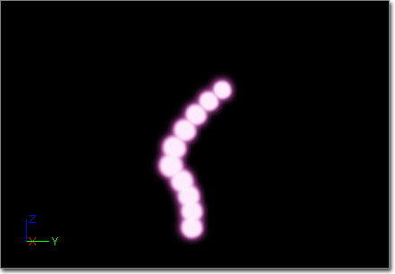

Velocity (속도)
Apply Owner Scale (오너 스케일 적용) - 참이면 속도 값은 파티클 시스템 컴포넌트의 스케일 값으로 조절됩니다.
In World Space (월드 공간 내) - 참이면 속도는 월드-공간 내에 있는 것으로 간주됩니다.
Start Velocity (시작 속도) - 파티클의 스폰 시간에 적용할 속도를 내는 벡터 분포입니다. 오너 이미터의 EmitterTime(이미터 시간)을 사용하여 값을 구합니다.
Start Velocity Radial (시작 속도 반경) - 파티클에 반경 방향으로 적용할 속도를 내는 플로트 분포입니다. 이 방향은 스폰시의 파티클 위치에서 이미터의 위치를 빼서 정합니다. 오너 이미터의 EmitterTime(이미터 시간)을 사용하여 값을 구합니다.
Initial Vel (Seeded)
Initial Vel (Seeded) (초기 속도 (시드))는 파티클이 방출될 때 속도를 설정한다는 점에서는 Initial Velocity(초기 속도) 모듈과 같습니다만, 이미터가 사용될 때마다 모듈로부터의 효과를 좀 더 일관되게 하기 위해, 분포 값을 선택할 때 사용되는 시드 정보를 지정할 수 있는 모듈이라는 점이 다릅니다. 다음과 같은 멤버가 포함됩니다:
RandomSeed (랜덤 시드)
Random Seed Info (랜덤 시드 정보) - 이 모듈 속성용 "임의" 값을 선택할 때 사용할 랜덤 시드입니다.
| 속성 | 설명 |
|---|---|
| Get Seed From Instance (인스턴스에서 시드 구하기) | 참이면 모듈은 오너 인스턴스에서 시드를 구해 봅니다. 실패시 예비로 Random Seeds (랜덤 시드) 배열에서 구하도록 합니다. |
| Instance Seed Is Index (인스턴스 시드는 인덱스) | 참이면 인스턴스에서 구한 시드값이 Random Seeds (랜덤 시드) 배열 속으로의 인덱스가 됩니다. |
| Parameter Name (파라미터 이름) | 이 시드 설정용으로 놓은 인스턴스에 노출시킬 이름입니다. |
| Random Seeds (랜덤 시드) | 이 모듈용으로 활용할 랜덤 시드값입니다. 값이 여럿 지정되면 인스턴스에서 임의의 값이 선택됩니다. |
| Reset Seed On Emitter Looping (이미터 반복시 시드 리셋) | 참이면 이미터가 반복될 때마다 시드를 리셋시킵니다. |
Velocity (속도)
Apply Owner Scale (오너 스케일 적용) - 참이면 속도값은 ParticleSystemComponent(파티클 시스템 컴포넌트)의 스케일로 조절합니다.
In World Space (월드 공간 내) - 참이면 속도는 월드 공간 안에 있는 것으로 간주합니다.
Start Velocity (시작 속도) - 파티클의 스폰 시간에 적용할 속도를 내는 벡터 분포입니다. 오너 이미터의 EmitterTime(이미터 시간)을 사용하여 값을 구합니다.
Start Velocity Radial (시작 속도 반경) - 파티클에 반경 방향으로 적용할 속도를 내는 플로트 분포입니다. 이 방향은 스폰시의 파티클 위치에서 이미터의 위치를 빼서 정합니다. 오너 이미터의 EmitterTime(이미터 시간)을 사용하여 값을 구합니다.
Inherit Parent Vel
Inheret Parent Vel(부모 속도 상속)은 파티클이 스폰될 때 부모(파티클 이미터 자체)의 속도를 물려주는 모듈입니다. 다음과 같은 멤버가 포함됩니다:
Velocity (속도)
Apply Owner Scale (오너 스케일 적용) - 참이면 속도값은 ParticleSystemComponent(파티클 시스템 컴포넌트)의 스케일로 조절합니다.
In World Space (월드 공간 내) - 참이면 속도는 월드 공간 안에 있는 것으로 간주합니다.
Scale (스케일) - 스폰 도중 파티클 속도에다 더하기 전에 부모 속도에 적용시킬 벡터 분포입니다. 파티클의 RelativeTime(상대 시간)을 사용하여 값을 구합니다.
Velocity/Life
(커서를 올리면 움직입니다.)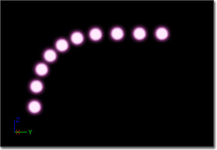
Velocity (속도)
Absolute (절대) - 참이면 속도는 분포 내의 값으로 설정됩니다. 이를 통해 파티클 수명의 특정 지점에 속도를 직접 설정해 줄 수 있습니다. 알아둘 점은 기존에 속도에 영향을 끼치는 모듈 '위에' 적용되지 않는 세팅이라는 점입니다. 또한 "Initial Velocity"(초기 속도) 모듈이 파티클의 초기 속도에 공헌하지 못하게도 합니다. 거짓이면 속도는 분포 값으로 스케일 조절됩니다.
Apply Owner Scale (오너 스케일 적용) - 참이면 속도값은 ParticleSystemComponent(파티클 시스템 컴포넌트)의 스케일로 조절합니다.
In World Space (월드 공간 내) - 참이면 속도는 월드 공간 안에 있는 것으로 간주합니다.
주: 움직이는 로컬-공간 이미터는 결과가 이상하게 나옵니다.
Vel Over Life (수명에 걸친 속도) - 속도에 적용되는 스케일 값으로 사용되는 벡터 분포입니다. 파티클의 RelativeTime(상대 시간)을 사용하여 값을 구합니다.
라이팅된 파티클
- 머티리얼에 unlit 이외의 라이팅 모델을 사용합니다. (효과를 월드에 통합하는 데는 비방향성(nondirectional)이 매우 싸기도 하니 끝내줍니다. 또는 노멀 매핑같은 것들의 방향을 직접 주려면 퐁(phong)을 쓰면 됩니다.)
- 캐스케이이드의 LOD 거리 설정에 보면, 각각의 LOD에 대해 bLit 라는 플랙이 새로 생겨 있습니다. 그거 꼭 선택하셔야 합니다.